从格子 S7 出发，要走到终点。有两条路线。向上穿过泥地 S4，最快 2 步到终点，可是在泥地里每次向上，十次有九次原地打滑；向左绕开泥地，不会打滑，固定 6 步到终点。走进终点得 1 分，其余各步得 0 分；分数每晚到一步，就多乘一次折扣 γ = . 9 \gamma=.9 γ = .9 . 9 .9 .9 . 9 5 ≈ . 590 .9^5\approx.590 . 9 5 ≈ .590 9 / 19 ≈ . 474 9/19\approx.474 9/19 ≈ .474 . 590 .590 .590
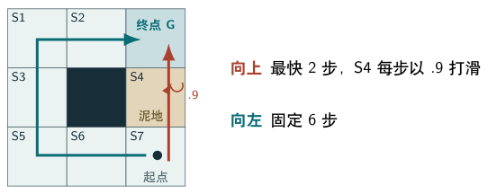
章首主算例。左边是地图：深色格是墙，米色格 S4 是泥地，格上的自环表示打滑；黑点是起点 S7，右上角是终点 G。红线向上穿过泥地，青线向左绕开泥地。右侧写两条路线：向上最快 2 步，在 S4 每步以 .9 的概率打滑；向左固定 6 步。进终点得多少分、晚到的奖励怎样折算，留到 3.1 节的算例和 3.2 节的折扣回报。这张地图贯穿第 3 到第 8 章。
第 2 章的赌博机里，动作不改变下一轮的局面。在平稳赌博机中，上一轮选了什么不改变下一轮各臂的奖励规律；它只通过智能体自己的估计影响下一次选择。泥地里，S7 选向上还是向左，决定下一步站在 S4 还是 S6，以后能走的路和要等的步数都跟着改变。一个动作既影响当前奖励，又影响下一步可能到达的状态。
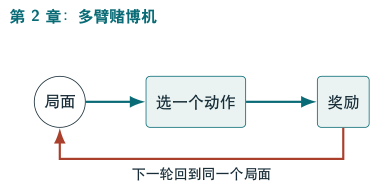
第 2 章的交互。局面、动作、奖励排成一圈，红色箭头表示下一轮回到同一个局面，动作不改变以后的情形。
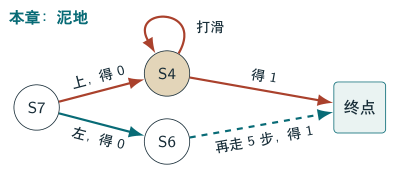
本章的交互。圆圈是格子，箭头上写动作和这一步的奖励；S4 上的红色自环是打滑，虚线代表绕行还要走的 5 步。S7 的选择决定下一步在 S4 还是 S6，两条路线的奖励都要到最后一步才来。
把第 2 章的做法逐项搬到泥地上，三处都要换掉：
第 2 章的做法
在泥地上为什么不够
本章换成什么
每一轮面对同一个局面
所在的格子变了，能走的路也变了
状态（3.1）
按本步奖励的平均值比较动作
S7 向上、向左，本步奖励都是 0
回报（3.2）
一个动作对应一个平均值
向左好不好，要看到了 S6 以后怎么走
策略、价值与动作价值（3.2–3.4）
这一变化带来三个困难。第一，奖励来得晚：绕行的前五步都得 0，第六步才得 1，只看眼前一步，两条路线分不出好坏。第二，结果随机：穿过泥地要打滑几次事先不知道，恰好打滑 k k k . 1 × . 9 k .1\times.9^k .1 × . 9 k
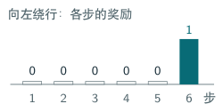
困难一：奖励延迟。横轴是绕行的第 1 到第 6 步，柱高是该步的奖励。前五步都是 0，只有第 6 步得 1。
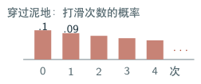
困难二：结果随机。横轴是穿过泥地时的打滑次数，柱高是它的概率，从 .1、.09 起每多一次乘 .9。同一个动作会产生长短不同的回合。
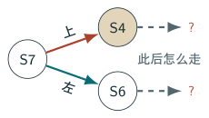
困难三：首步的价值取决于以后的走法。S7 向上到 S4、向左到 S6，虚线和问号表示此后的行动规则还没有确定。
三个困难各对应本章的一个概念。奖励来得晚，要先规定怎样把一串奖励合成一个数，这是 3.2 节的回报与折扣。结果随机，同一个选择可能跑出无穷多种轨迹，无法逐条列举；3.3 节对回报取期望得到价值，再用 Bellman 期望方程按第一步分组计算。首步的好坏依赖以后的走法，3.4 节用动作价值固定首动作、以后按策略行动，再在策略之间比较，得到最优策略。3.1 节先给出描述一步后果的语言，3.5 至 3.7 节讨论期限、回报准则和模型从哪里来。也有人把探索列为第四个困难：从不试走向左，就不知道向左的后果。本章假定模型或所需的数据已经给定。探索在第 2 章的赌博机里已经出现；第 5 章只做预测，第 6 章从经验学习控制时再回到它。
本章把这类问题写成有限马尔可夫决策过程（MDP）。智能体观察到当前状态；给定这个状态和所选动作，环境下一步产生什么后果由一个条件分布规定。策略规定在每个状态怎样选动作。把这一步反复接起来，才得到一个策略的长期表现；对回报取期望，就得到价值。价值满足按第一步分解的 Bellman 方程，上面的 9 / 19 9/19 9/19 . 9 5 .9^5 . 9 5
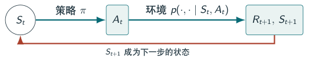
本章的问题形式。从左往右读：状态 S t S_t S t π \pi π A t A_t A t p ( ⋅ , ⋅ ∣ S t , A t ) p(\cdot,\cdot\mid S_t,A_t) p ( ⋅ , ⋅ ∣ S t , A t ) R t + 1 R_{t+1} R t + 1 S t + 1 S_{t+1} S t + 1 S t + 1 S_{t+1} S t + 1
本章固定一张地图、一组箭头和一个折扣因子。箭头规定如何行动，环境决定是否打滑，任务规定到达终点时的奖励。同一次出发可能有不同的回报。预测要确定的是从每个状态出发、始终按箭头行动的期望回报 。第 4 章把各分支的概率交给求解者，第 5 章只提供实际发生的转移，两章都用这里定义的价值作为参照。
问题中的“有限”指状态集和动作集有限；回合任务与折扣持续任务都可以是有限 MDP。Sutton 与 Barto 的回收机器人是另一个例子：状态是电量高或低，动作是搜索、等待、回去充电三种高层决策，视觉与抓取等细节由接口内部处理。写出一个 MDP，并不表示智能体知道其中的转移概率：第 4 章假定模型可以计算，第 5 章只给交互。泥地任务贯穿第 3 到第 8 章，起点分布 d 0 ( S 7 ) = 1 d_0(\mathrm{S7})=1 d 0 ( S7 ) = 1 π 0 \pi_0 π 0 S t S_t S t
本章用到前两章的三项结论，并为后面三章写出出发点。第 1 章 1.2 节划定了智能体与环境的边界，1.3 节把目标写成奖励的累积；本章的一步模型 p p p G t G_t G t q π ( s , a ) q_\pi(s,a) q π ( s , a ) R t + 1 + γ V ( S t + 1 ) R_{t+1}+\gamma V(S_{t+1}) R t + 1 + γV ( S t + 1 )
对这个问题设定有不同意见，来自第 1 章的大世界观点。真实环境远大于任何智能体能表示的状态集，有限 MDP 只是一种近似，以 v ∗ v_* v ∗
本章各节排成一条链：每一节的方法解决上一节留下的困难，又留下新的困难。下图沿箭头读，蓝框是一节的方法，框下红字是这一节留下、下一节回答的问题；表格给出同一条链的式子。
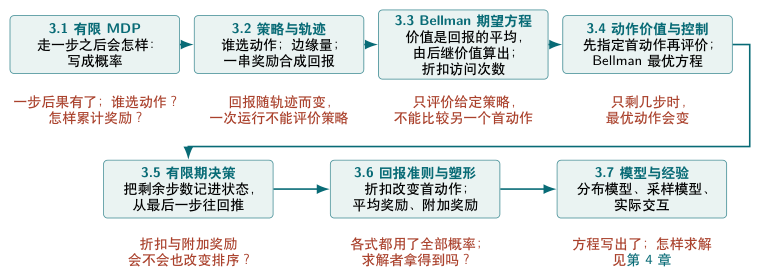
本章的痛点链。从左上的 3.1 读起，到 3.4 折回下一行，最后一格指向第 4 章：方程写出了，求解的计算要到下一章才给出。图下的图例说明，红字是这一节留下、下一节回答的问题；3.2 框里补了边缘量，3.3 框里补了折扣访问次数。
节
方法
解决的困难
留下的困难
3.1
有限 MDP 与马尔可夫性质
用 p ( s ′ , r ∣ s , a ) p(s',r\mid s,a) p ( s ′ , r ∣ s , a )
还没有规定谁选动作、奖励怎样累计
3.2
策略、轨迹分布与回报
Pr π ( τ ) = d 0 ∏ π p \Pr_\pi(\tau)=d_0\prod\pi\,p Pr π ( τ ) = d 0 ∏ π p G t G_t G t P P P r r r 回报随轨迹而变，一次运行不能评价策略
3.3
状态价值与 Bellman 期望方程
v π v_\pi v π 只评价给定策略，不能比较另一个首动作
3.4
动作价值与最优策略
q π q_\pi q π v ∗ ( s ) = max a q ∗ ( s , a ) v_*(s)=\max_aq_*(s,a) v ∗ ( s ) = max a q ∗ ( s , a ) 目标默认不随时间改变
3.5
有限期决策与剩余时间
决策状态 ( s , h ) (s,h) ( s , h ) v ∗ , h v_{*,h} v ∗ , h
期限、折扣与附加奖励都是任务的选择，是否改变策略排序
3.6
回报准则与奖励塑形
回报有界的条件；势差塑形保留动作排序
各式都对全部后果求期望，求解者能否得到 p p p
3.7
分布模型、采样模型与实际经验
区分三种环境访问方式
方程写出了，求解的计算尚未给出（第 4 章 ）
3.1 有限 MDP 与马尔可夫性质课件
泥地任务里，环境中唯一的随机性来自 S4 的打滑。地图有七个非终止格 S 1 , … , S 7 \mathrm{S1},\ldots,\mathrm{S7} S1 , … , S7 G \mathrm G G G t G_t G t S 7 \mathrm{S7} S7 S 4 \mathrm{S4} S4 S 4 \mathrm{S4} S4 . 9 .9 .9 S 4 \mathrm{S4} S4 . 1 .1 .1 G \mathrm G G 1 1 1 0 0 0 γ = . 9 \gamma=.9 γ = .9 . 9 .9 .9 γ = . 9 \gamma=.9 γ = .9 π 0 \pi_0 π 0
本章的决策时刻离散，状态集与动作集有限。智能体在每个非终止时刻看见状态 S t S_t S t A t A_t A t R t + 1 R_{t+1} R t + 1 S t + 1 S_{t+1} S t + 1
M = ( S , A , p , d 0 , γ ) , \mathcal M=(\mathcal S,\mathcal A,p,d_0,\gamma), M = ( S , A , p , d 0 , γ ) ,
其中一步规律不随时间改变。
分量
定义
S \mathcal S S 状态集，有限，含终点。
A ( s ) \mathcal A(s) A ( s ) 在非终止状态 s s s
p ( s ′ , r ∣ s , a ) p(s',r\mid s,a) p ( s ′ , r ∣ s , a ) 在 s s s a a a s ′ s' s ′ r r r
d 0 ( s ) d_0(s) d 0 ( s ) 第一步从状态 s s s
γ \gamma γ 折扣，0 ≤ γ ≤ 1 0\le\gamma\le1 0 ≤ γ ≤ 1 γ \gamma γ γ = 1 \gamma=1 γ = 1
本课用 Sutton 与 Barto 的联合一步模型 p ( s ′ , r ∣ s , a ) p(s',r\mid s,a) p ( s ′ , r ∣ s , a ) ( S , A , P , R , γ ) (\mathcal S,\mathcal A,\mathcal P,\mathcal R,\gamma) ( S , A , P , R , γ ) P \mathcal P P R s a \mathcal R^a_s R s a p p p p p p r ( s , a ) r(s,a) r ( s , a ) R t + 1 R_{t+1} R t + 1 p p p d 0 d_0 d 0 d 0 ( S 7 ) = 1 d_0(\mathrm{S7})=1 d 0 ( S7 ) = 1 0 ≤ γ ≤ 1 0\le\gamma\le1 0 ≤ γ ≤ 1 γ = 1 \gamma=1 γ = 1
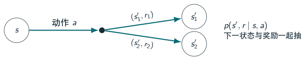
一步后果的联合抽取。从状态 s s s a a a ( s ′ , r ) (s',r) ( s ′ , r ) p ( s ′ , r ∣ s , a ) p(s',r\mid s,a) p ( s ′ , r ∣ s , a )
选读：泥地的组成
按上面的记号，泥地的状态集 S = { S 1 , … , S 7 , G } \mathcal S=\{\mathrm{S1},\ldots,\mathrm{S7},\mathrm G\} S = { S1 , … , S7 , G } p ( G , 1 ∣ S 4 , ↑ ) = . 1 p(\mathrm G,1\mid\mathrm{S4},\uparrow)=.1 p ( G , 1 ∣ S4 , ↑ ) = .1 p ( S 4 , 0 ∣ S 4 , ↑ ) = . 9 p(\mathrm{S4},0\mid\mathrm{S4},\uparrow)=.9 p ( S4 , 0 ∣ S4 , ↑ ) = .9 R = { 0 , 1 } \mathcal R=\{0,1\} R = { 0 , 1 } d 0 ( S 7 ) = 1 d_0(\mathrm{S7})=1 d 0 ( S7 ) = 1 G \mathrm G G S + \mathcal S^+ S + S \mathcal S S
一步模型描述下一状态与奖励的联合分布。对每个非终止状态 s s s a ∈ A ( s ) a\in\mathcal A(s) a ∈ A ( s )
p ( s ′ , r ∣ s , a ) = Pr ( S t + 1 = s ′ , R t + 1 = r ∣ S t = s , A t = a ) , ∑ s ′ , r p ( s ′ , r ∣ s , a ) = 1 , p(s',r\mid s,a)=\Pr(S_{t+1}=s',R_{t+1}=r\mid S_t=s,A_t=a),\qquad \sum_{s',r}p(s',r\mid s,a)=1, p ( s ′ , r ∣ s , a ) = Pr ( S t + 1 = s ′ , R t + 1 = r ∣ S t = s , A t = a ) , s ′ , r ∑ p ( s ′ , r ∣ s , a ) = 1 ,
其中 s ′ s' s ′ S \mathcal S S
P ( s ′ ∣ s , a ) = ∑ r p ( s ′ , r ∣ s , a ) , r ( s , a ) = ∑ s ′ , r r p ( s ′ , r ∣ s , a ) . P(s'\mid s,a)=\sum_r p(s',r\mid s,a),\qquad r(s,a)=\sum_{s',r}r\,p(s',r\mid s,a). P ( s ′ ∣ s , a ) = r ∑ p ( s ′ , r ∣ s , a ) , r ( s , a ) = s ′ , r ∑ r p ( s ′ , r ∣ s , a ) .
例如，p ( G , 1 ∣ S 4 , ↑ ) = . 1 p(\mathrm G,1\mid \mathrm{S4},\uparrow)=.1 p ( G , 1 ∣ S4 , ↑ ) = .1 p ( S 4 , 0 ∣ S 4 , ↑ ) = . 9 p(\mathrm{S4},0\mid \mathrm{S4},\uparrow)=.9 p ( S4 , 0 ∣ S4 , ↑ ) = .9 P ( G ∣ S 4 , ↑ ) = . 1 P(\mathrm G\mid\mathrm{S4},\uparrow)=.1 P ( G ∣ S4 , ↑ ) = .1 r ( S 4 , ↑ ) = . 1 × 1 + . 9 × 0 = . 1 r(\mathrm{S4},\uparrow)=.1\times1+.9\times0=.1 r ( S4 , ↑ ) = .1 × 1 + .9 × 0 = .1
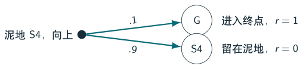
S4 向上一步的联合后果核。从黑点出发的两枝：以 .1 进入终点并得 1，以 .9 留在泥地并得 0。每一枝把下一状态和奖励绑在一起，( G , 0 ) (\mathrm G,0) ( G , 0 ) ( S 4 , 1 ) (\mathrm{S4},1) ( S4 , 1 )
P ( G ∣ S 4 , ↑ ) = . 1 P(\mathrm G\mid\mathrm{S4},\uparrow)=.1 P ( G ∣ S4 , ↑ ) = .1 r ( S 4 , ↑ ) = . 1 r(\mathrm{S4},\uparrow)=.1 r ( S4 , ↑ ) = .1 . 1 .1 .1 P P P r r r r r r
易错 s ′ s' s ′ r r r ( G , 0 ) (\mathrm G,0) ( G , 0 ) ( S 4 , 1 ) (\mathrm{S4},1) ( S4 , 1 )
马尔可夫性质说的是当前状态是否保留了预测下一步所需的信息。记 H t = ( O 0 , A 0 , R 1 , O 1 , … , A t − 1 , R t , O t ) H_t=(O_0,A_0,R_1,O_1,\ldots,A_{t-1},R_t,O_t) H t = ( O 0 , A 0 , R 1 , O 1 , … , A t − 1 , R t , O t ) t t t S t = f ( H t ) S_t=f(H_t) S t = f ( H t ) a a a
Pr ( S t + 1 = s ′ , R t + 1 = r ∣ H t , A t = a ) = Pr ( S t + 1 = s ′ , R t + 1 = r ∣ S t , A t = a ) . \Pr(S_{t+1}=s',R_{t+1}=r\mid H_t,A_t=a)=\Pr(S_{t+1}=s',R_{t+1}=r\mid S_t,A_t=a). Pr ( S t + 1 = s ′ , R t + 1 = r ∣ H t , A t = a ) = Pr ( S t + 1 = s ′ , R t + 1 = r ∣ S t , A t = a ) .
定义要求对每个动作、每种后果和每一段可行历史都成立。满足它时，知道现在在哪一格就够了，不必知道是怎么来的。在目前的地图上，刚踏入泥地和已经连续打滑两次是两段不同的历史。两者的当前位置都是 S4，下一次向上的脱困概率同为 . 1 .1 .1
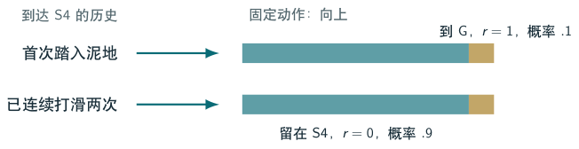
历史不同、后果相同。左边是到达 S4 的两段历史，右边是向上一步的后果分布：长的青色段是留在 S4、奖励 0、概率 .9，短的金色段是到 G、奖励 1、概率 .1。两段历史的条形完全相同，当前位置 S4 已经足够预测下一步。
选读：非马尔可夫观测与智能体状态
第 1 章 1.2 用提示任务讲过直觉：只读当前画面，成功率恒为二分之一，智能体得记住刚才的提示。下面把同一现象放进泥地，用上述定义给出一个反例，再构造一个通过检验的状态。
传感器把泥地地图上排的 S1、S2 都报告成 x x x x x x ( x , 0 ) (x,0) ( x , 0 ) ( G , 1 ) (\mathrm G,1) ( G , 1 )
Pr ( R t + 1 = 1 ∣ h S 1 , → ) = 0 ≠ 1 = Pr ( R t + 1 = 1 ∣ h S 2 , → ) . \Pr(R_{t+1}=1\mid h_{\mathrm{S1}},\rightarrow)=0\neq 1=\Pr(R_{t+1}=1\mid h_{\mathrm{S2}},\rightarrow). Pr ( R t + 1 = 1 ∣ h S1 , → ) = 0 = 1 = Pr ( R t + 1 = 1 ∣ h S2 , → ) .
两个条件分布不同，所以把 x x x
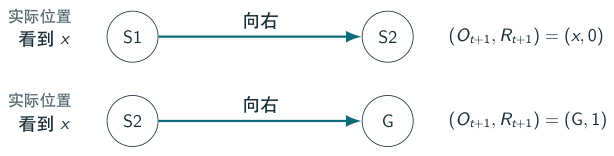
观测 x x x x x x ( x , 0 ) (x,0) ( x , 0 ) ( G , 1 ) (\mathrm G,1) ( G , 1 ) x x x
再看控制。价值按泥地模型精确计算，仅在进入 G 时得 1，γ = . 9 \gamma=.9 γ = .9 v ∗ ( S 1 ) = . 9 v_*(\mathrm{S1})=.9 v ∗ ( S1 ) = .9 v ∗ ( S 2 ) = 1 v_*(\mathrm{S2})=1 v ∗ ( S2 ) = 1 x x x x x x x x x Li、Walsh 与 Littman，2006，§3 。
合并的状态若最优动作也不同，连控制都会出错。只把 S4 和 S6 合并成 x x x . 1 .1 .1 ( G , 1 ) (\mathrm G,1) ( G , 1 ) ( x , 0 ) (x,0) ( x , 0 ) . 05 .05 .05
对只保留最优动作的粗状态有不同意见。一方认为，智能体最终只需要行动，只要合并后的观测能选对动作，就不必追求能预测价值的状态；状态越粗，要学的东西越少。另一方指出，价值学习要靠后继状态的估计来更新当前估计，合并以后的价值会随两种历史的访问比例漂移，上面的 . 05 .05 .05
对已知的有限 MDP，这个比较可以直接用模型做。若 x , y x,y x , y ϕ \phi ϕ a a a z ′ z' z ′ r r r
∑ s ′ : ϕ ( s ′ ) = z ′ p ( s ′ , r ∣ x , a ) = ∑ s ′ : ϕ ( s ′ ) = z ′ p ( s ′ , r ∣ y , a ) . \sum_{s':\,\phi(s')=z'}p(s',r\mid x,a)
=\sum_{s':\,\phi(s')=z'}p(s',r\mid y,a). s ′ : ϕ ( s ′ ) = z ′ ∑ p ( s ′ , r ∣ x , a ) = s ′ : ϕ ( s ′ ) = z ′ ∑ p ( s ′ , r ∣ y , a ) .
若每个组内的原状态有相同的可用动作集，并满足上式，便可直接用各组作为一个 MDP 的状态，且与组内各原状态的初始比例无关。这个判据针对可以从每个原状态出发的聚合。面对一条实际观测流，智能体只知道它的动作与观测历史，仍可通过上面的历史条件定义自己的状态。
第 1 章说过，状态是智能体自己造出来的：感知把上一时刻的状态、刚做的动作和新观测合成当前状态。智能体状态就是上面由历史算出的 S t = f ( H t ) S_t=f(H_t) S t = f ( H t ) u u u
S t + 1 = u ( S t , A t , R t + 1 , O t + 1 ) . S_{t+1}=u(S_t,A_t,R_{t+1},O_{t+1}). S t + 1 = u ( S t , A t , R t + 1 , O t + 1 ) .
检验沿用马尔可夫性质的定义。同一时刻任取 f ( h ) = f ( h ~ ) f(h)=f(\tilde h) f ( h ) = f ( h ~ ) a a a
Pr ( S t + 1 , R t + 1 ∣ h , a ) = Pr ( S t + 1 , R t + 1 ∣ h ~ , a ) . \Pr(S_{t+1},R_{t+1}\mid h,a)=\Pr(S_{t+1},R_{t+1}\mid \tilde h,a). Pr ( S t + 1 , R t + 1 ∣ h , a ) = Pr ( S t + 1 , R t + 1 ∣ h ~ , a ) .
对所有这样的历史对、所有动作和所有后果都相等，同一时刻所有被映射到同一状态的历史便能共用一行核 p t ( s ′ , r ∣ s , a ) p_t(s',r\mid s,a) p t ( s ′ , r ∣ s , a ) p p p
回到 S1、S2 合并成 x x x x x x u u u
S t S_t S t A t A_t A t O t + 1 O_{t+1} O t + 1 S t + 1 S_{t+1} S t + 1
S3
上
x x x S1
S1
右
x x x S2
S2
左
x x x S1
S1 或 S2
其余
x x x S t S_t S t
任意
任意
格名 o ≠ x o\ne x o = x
o o o
这条规则只用到动作和观测，没有用到奖励。起点 S7 已知，按这张表算出的 S t S_t S t S t S_t S t DQN （Mnih 等，2015）在 Atari 上把最近 4 帧叠在一起作为输入，这是设计者固定的一种 u u u u u u
对这项检验也有不同意见。一方认为它过严。在大世界里，智能体的资源远小于环境，几乎不可能得到严格通过检验的状态。实用的要求是状态足以支持当前的预测与控制，近似的程度可以用预测误差来衡量。这样马尔可夫性就从是非问题变成了程度问题。另一方取部分可观测马尔可夫决策过程（POMDP）的观点。模型已知时，对隐藏状态的后验分布（信念状态）可以严格通过检验，应当以它作为正确性的标准。第 18 章比较这两种看法。
已解决的部分与条件 模型已知时，马尔可夫性可以逐项核对：对映射到同一状态的每一对历史，比较同一动作下后果的条件分布。上面的 S1、S2 例子就是这样核对的。环境模型已知时，信念状态总能通过检验。不知道模型时，预测状态表示把状态写成对一组检验的预测，Littman、Sutton 与 Singh（2001）证明，有限的 POMDP 都能用有限个这样的预测表示。
已有做法与假设 实践中常把最近几帧观测拼在一起当作状态，或用循环网络从历史递推状态。这假设所需的历史长度有限，或者网络能从数据中学出需要记住的东西；两者都没有事先的保证。
未解决的部分 只有一条有限长的经验流时，历史对的数目随长度指数增长，逐对比较做不到。怎样用有限样本判断一个状态足够马尔可夫，以及近似马尔可夫的状态让价值估计偏多少，没有一般的检验与误差界。
怎样检验 用 3.1 节的传感器：S1、S2 共用观测 x x x
3.2 策略、轨迹分布与回报课件
3.1 节的模型只写了动作选定以后环境怎样回应：p ( G , 1 ∣ S 4 , ↑ ) = . 1 p(\mathrm G,1\mid\mathrm{S4},\uparrow)=.1 p ( G , 1 ∣ S4 , ↑ ) = .1 π ( a ∣ s ) \pi(a\mid s) π ( a ∣ s ) s s s a a a a ∈ A ( s ) a\in\mathcal A(s) a ∈ A ( s )
Pr ( A t = a , S t + 1 = s ′ , R t + 1 = r ∣ S t = s ) = π ( a ∣ s ) p ( s ′ , r ∣ s , a ) . \Pr(A_t=a,S_{t+1}=s',R_{t+1}=r\mid S_t=s)=\pi(a\mid s)p(s',r\mid s,a). Pr ( A t = a , S t + 1 = s ′ , R t + 1 = r ∣ S t = s ) = π ( a ∣ s ) p ( s ′ , r ∣ s , a ) .
固定箭头策略 π 0 \pi_0 π 0
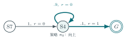
固定箭头策略从 S7 出发的转移图。S4 的自环允许同一格在一条轨迹中出现多次。
代入泥地，Pr π 0 ( A t = ↑ , S t + 1 = G , R t + 1 = 1 ∣ S t = S 4 ) = π 0 ( ↑ ∣ S 4 ) p ( G , 1 ∣ S 4 , ↑ ) = 1 × . 1 \Pr_{\pi_0}(A_t=\uparrow,S_{t+1}=\mathrm G,R_{t+1}=1\mid S_t=\mathrm{S4})=\pi_0(\uparrow\mid\mathrm{S4})\,p(\mathrm G,1\mid\mathrm{S4},\uparrow)=1\times.1 Pr π 0 ( A t =↑ , S t + 1 = G , R t + 1 = 1 ∣ S t = S4 ) = π 0 ( ↑∣ S4 ) p ( G , 1 ∣ S4 , ↑ ) = 1 × .1 π 0 \pi_0 π 0
选读：联合分布与边缘量
联合分布对另一个变量求和，得到转移概率 P ( s ′ ∣ s , a ) P(s'\mid s,a) P ( s ′ ∣ s , a ) r ( s , a ) r(s,a) r ( s , a ) V ( s ′ ) V(s') V ( s ′ )
∑ s ′ , r p ( s ′ , r ∣ s , a ) [ r + γ V ( s ′ ) ] = r ( s , a ) + γ ∑ s ′ P ( s ′ ∣ s , a ) V ( s ′ ) . \sum_{s',r}p(s',r\mid s,a)[r+\gamma V(s')]=r(s,a)+\gamma\sum_{s'}P(s'\mid s,a)V(s'). s ′ , r ∑ p ( s ′ , r ∣ s , a ) [ r + γV ( s ′ )] = r ( s , a ) + γ s ′ ∑ P ( s ′ ∣ s , a ) V ( s ′ ) .
对只按当前状态行动的固定策略，后续回报的期望由后继状态决定。把这个期望取作 V ( s ′ ) V(s') V ( s ′ ) P , r P,r P , r
q π ( s , a ) = r ( s , a ) + γ ∑ s ′ P ( s ′ ∣ s , a ) v π ( s ′ ) . q_\pi(s,a)=r(s,a)+\gamma\sum_{s'}P(s'\mid s,a)v_\pi(s'). q π ( s , a ) = r ( s , a ) + γ s ′ ∑ P ( s ′ ∣ s , a ) v π ( s ′ ) .
边缘量在哪里不够用，可以换一条读取上步奖励的策略来看，这条策略超出了马尔可夫策略。两步例子：第一步，模型 I 各以一半概率产生 ( A , 1 ) (A,1) ( A , 1 ) ( B , 0 ) (B,0) ( B , 0 ) ( A , 0 ) (A,0) ( A , 0 ) ( B , 1 ) (B,1) ( B , 1 ) . 5 .5 .5 P P P r r r γ = . 9 \gamma=.9 γ = .9 . 5 + . 9 ( . 5 ) = . 95 .5+.9(.5)=.95 .5 + .9 ( .5 ) = .95 . 5 .5 .5 . 95 .95 .95
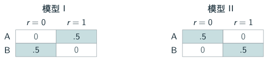
两个模型的第一步联合概率。每张表的行是下一状态 A、B，列是奖励 0、1，格中是概率。两表的行和、列和都相同，所以 P P P
若第二步的规则只看当前状态，两个模型给出的以后价值相同；上面用 P , r P,r P , r
同一策略产生不同长度的回合。格名 S4 指地图中的一个位置，带时间下标的 S t S_t S t t t t
S 0 , A 0 , R 1 , S 1 , A 1 , R 2 , S 2 , … , S T − 1 , A T − 1 , R T , S T . S_0,A_0,R_1,S_1,A_1,R_2,S_2,\ldots,S_{T-1},A_{T-1},R_T,S_T. S 0 , A 0 , R 1 , S 1 , A 1 , R 2 , S 2 , … , S T − 1 , A T − 1 , R T , S T .
令 T = inf { t ≥ 0 : S t = G } T=\inf\{t\ge0:S_t=\mathrm G\} T = inf { t ≥ 0 : S t = G } S t = G S_t=\mathrm G S t = G t t t G \mathrm G G R T R_T R T T T T
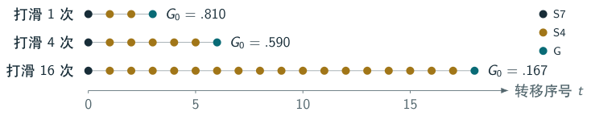
三个回合的时间线。横轴是转移序号 t t t
三个回合的数可以直接算。每条轨迹先从 S7 到 S4，在 S4 打滑若干次，最后进入 G。共走 n n n G 0 = . 9 n − 1 G_0=.9^{n-1} G 0 = . 9 n − 1 G 0 G_0 G 0 . 9 2 = . 810 .9^2=.810 . 9 2 = .810 . 9 5 ≈ . 590 .9^5\approx.590 . 9 5 ≈ .590 . 9 17 ≈ . 167 .9^{17}\approx.167 . 9 17 ≈ .167 T T T
实际抽样的回合与完整地图
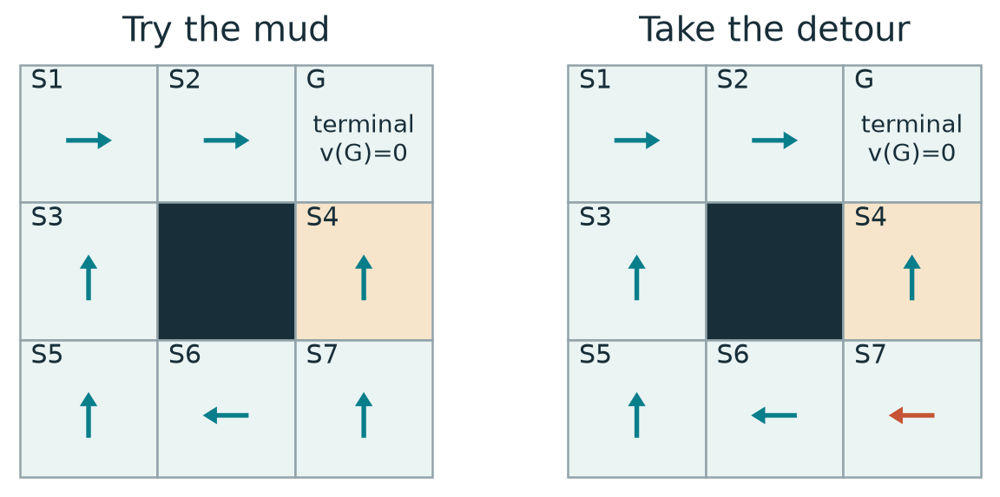
同一任务上的两条策略
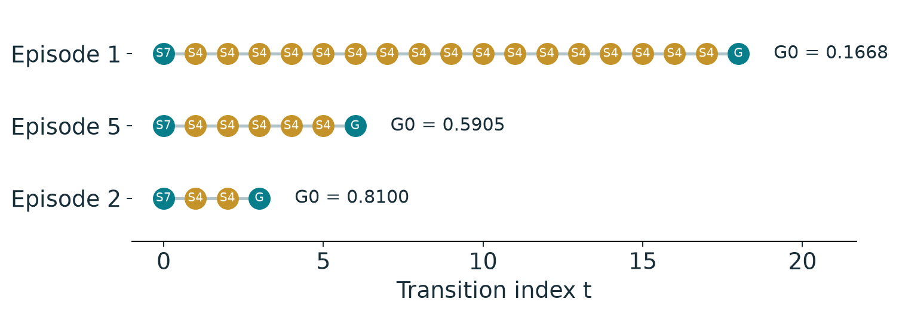
实际抽样轨迹
图中回合来自实际采样。进入泥地后打滑的次数决定回合长度。
回报按奖励到达的时刻折扣。G t G_t G t A t A_t A t
G t = ∑ k = 0 T − t − 1 γ k R t + k + 1 , G t = R t + 1 + γ G t + 1 , G T = 0. G_t=\sum_{k=0}^{T-t-1}\gamma^kR_{t+k+1},\qquad G_t=R_{t+1}+\gamma G_{t+1},\qquad G_T=0. G t = k = 0 ∑ T − t − 1 γ k R t + k + 1 , G t = R t + 1 + γ G t + 1 , G T = 0.
考虑轨迹 S 7 , S 4 , S 4 , S 4 , G \mathrm{S7},\mathrm{S4},\mathrm{S4},\mathrm{S4},\mathrm G S7 , S4 , S4 , S4 , G ( 0 , 0 , 0 , 1 ) (0,0,0,1) ( 0 , 0 , 0 , 1 ) G 0 = . 9 3 = . 729 G_0=.9^3=.729 G 0 = . 9 3 = .729 G 1 = . 81 G_1=.81 G 1 = .81 G 0 = . 9 G_0=.9 G 0 = .9 γ \gamma γ
同一条四步记录里 S4 出现三次，三次之后的回报依次是 G 1 = . 81 G_1=.81 G 1 = .81 G 2 = . 9 G_2=.9 G 2 = .9 G 3 = 1 G_3=1 G 3 = 1
要折扣有两个用处。γ < 1 \gamma<1 γ < 1 γ \gamma γ
轨迹概率是策略概率与环境概率沿时间的连乘。初始状态服从 d 0 d_0 d 0 τ = ( s 0 , a 0 , r 1 , s 1 , … , a T − 1 , r T , s T ) \tau=(s_0,a_0,r_1,s_1,\ldots,a_{T-1},r_T,s_T) τ = ( s 0 , a 0 , r 1 , s 1 , … , a T − 1 , r T , s T )
Pr π ( τ ) = d 0 ( s 0 ) ∏ t = 0 T − 1 π ( a t ∣ s t ) p ( s t + 1 , r t + 1 ∣ s t , a t ) . \Pr_\pi(\tau)=d_0(s_0)\prod_{t=0}^{T-1}\pi(a_t\mid s_t)p(s_{t+1},r_{t+1}\mid s_t,a_t). π Pr ( τ ) = d 0 ( s 0 ) t = 0 ∏ T − 1 π ( a t ∣ s t ) p ( s t + 1 , r t + 1 ∣ s t , a t ) .
记 K K K 1 × . 9 × . 9 × . 1 = . 081 1\times.9\times.9\times.1=.081 1 × .9 × .9 × .1 = .081 K = k K=k K = k . 9 k ( . 1 ) .9^k(.1) . 9 k ( .1 ) γ k + 1 \gamma^{k+1} γ k + 1 . 9 .9 .9
打滑两次这条路径对起点平均回报的贡献是概率乘回报，即 . 081 × . 729 .081\times.729 .081 × .729 k ≥ 0 k\ge0 k ≥ 0 v π 0 ( S 7 ) v_{\pi_0}(\mathrm{S7}) v π 0 ( S7 ) K K K π 0 \pi_0 π 0
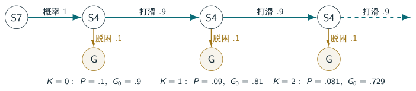
按打滑次数 K K K P P P G 0 G_0 G 0
选读：吸收状态与回报的界
终止状态可看作吸收状态：进入后停在原地，此后每步奖励为 0 0 0 G t = ∑ k ≥ 0 γ k R t + k + 1 G_t=\sum_{k\ge0}\gamma^kR_{t+k+1} G t = ∑ k ≥ 0 γ k R t + k + 1 G T = 0 G_T=0 G T = 0 ∣ R t ∣ ≤ R max |R_t|\le R_{\max} ∣ R t ∣ ≤ R m a x γ < 1 \gamma<1 γ < 1
∣ G t ∣ ≤ ∑ k = 0 ∞ γ k R max = R max 1 − γ , |G_t|\le\sum_{k=0}^{\infty}\gamma^kR_{\max}=\frac{R_{\max}}{1-\gamma}, ∣ G t ∣ ≤ k = 0 ∑ ∞ γ k R m a x = 1 − γ R m a x ,
价值因此有限。泥地取 R max = 1 R_{\max}=1 R m a x = 1 γ = . 9 \gamma=.9 γ = .9 10 10 10 G 0 ≤ . 9 G_0\le.9 G 0 ≤ .9
γ = 1 \gamma=1 γ = 1 R max / ( 1 − γ ) R_{\max}/(1-\gamma) R m a x / ( 1 − γ ) E [ T ] \mathbb E[T] E [ T ] γ = 1 \gamma=1 γ = 1 ∣ G 0 ∣ ≤ R max T |G_0|\le R_{\max}T ∣ G 0 ∣ ≤ R m a x T R max E [ T ] R_{\max}\mathbb E[T] R m a x E [ T ]
3.3 状态价值与 Bellman 期望方程课件
同一策略、同一起点，每次运行的回报不同；评价策略要用一个不随运行改变的数，所以对回报取平均。状态价值是从给定状态出发、此后始终执行同一策略的期望回报，也就是回报分布的均值：
v π ( s ) = E π [ G t ∣ S t = s ] . v_\pi(s)=\mathbb E_\pi[G_t\mid S_t=s]. v π ( s ) = E π [ G t ∣ S t = s ] .
G t G_t G t v π ( s ) v_\pi(s) v π ( s ) s s s S t = s S_t=s S t = s v π v_\pi v π t t t s s s k k k . 1 ( . 9 ) k .1(.9)^k .1 ( .9 ) k γ k + 1 \gamma^{k+1} γ k + 1
v π 0 ( S 7 ) = ∑ k = 0 ∞ . 1 ( . 9 ) k γ k + 1 = . 1 γ 1 − . 9 γ = 9 19 . v_{\pi_0}(\mathrm{S7})=\sum_{k=0}^{\infty}.1(.9)^k\,\gamma^{k+1}
=\frac{.1\gamma}{1-.9\gamma}=\frac9{19}. v π 0 ( S7 ) = k = 0 ∑ ∞ .1 ( .9 ) k γ k + 1 = 1 − .9 γ .1 γ = 19 9 .
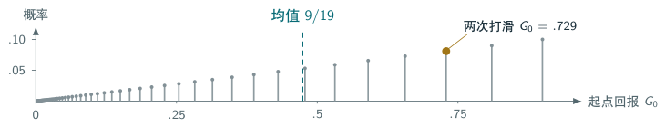
起点回报的分布。横轴是起点回报 G 0 G_0 G 0 9 / 19 9/19 9/19 v π 0 ( S 7 ) v_{\pi_0}(\mathrm{S7}) v π 0 ( S7 ) G 0 = . 729 G_0=.729 G 0 = .729
上图画到打滑 55 次为止，余下的概率约为 . 9 56 ≈ . 003 .9^{56}\approx.003 . 9 56 ≈ .003
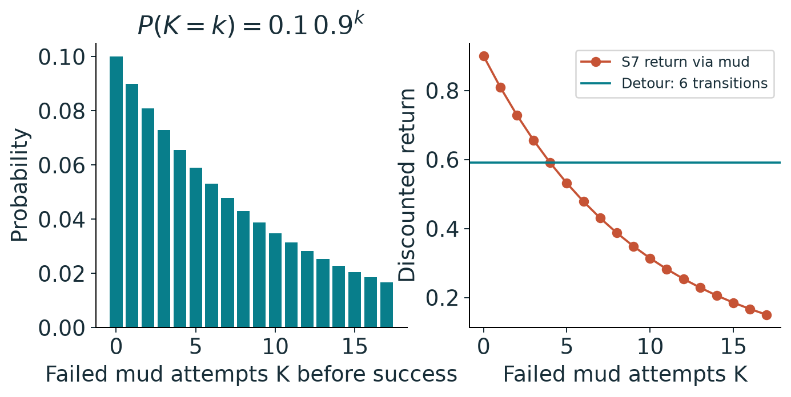
回报的概率与等待长度
按第一步分组，价值等于即时奖励加后继价值的期望。把第一步的后果记作 ( a , r , s ′ ) (a,r,s') ( a , r , s ′ )
v π ( s ) = E π [ G t ∣ S t = s ] ① 价值的定义 = E π [ R t + 1 + γ G t + 1 ∣ S t = s ] ② 回报递推 = E π [ R t + 1 + γ v π ( S t + 1 ) ∣ S t = s ] . ③ 按 ( a , r , s ′ ) 分组求平均，再合起来 \begin{aligned}
v_\pi(s)
&=\mathbb E_\pi[G_t\mid S_t=s] &&\text{① 价值的定义}\\
&=\mathbb E_\pi[R_{t+1}+\gamma G_{t+1}\mid S_t=s] &&\text{② 回报递推}\\
&=\mathbb E_\pi[R_{t+1}+\gamma v_\pi(S_{t+1})\mid S_t=s]. &&\text{③ 按 $(a,r,s')$ 分组求平均，再合起来}
\end{aligned} v π ( s ) = E π [ G t ∣ S t = s ] = E π [ R t + 1 + γ G t + 1 ∣ S t = s ] = E π [ R t + 1 + γ v π ( S t + 1 ) ∣ S t = s ] . ① 价值的定义 ② 回报递推 ③ 按 ( a , r , s ′ ) 分组求平均，再合起来
第 ① 步只是价值的定义。第 ② 步在任何单条轨迹上都成立：回报等于第一份奖励加上折扣后的余下回报，对轨迹取期望不改变等式。第 ③ 步是条件期望的塔式法则：先固定首动作、即时奖励和后继状态，对随后的随机轨迹求平均，再对首步本身求平均；首步的联合概率是 π ( a ∣ s ) p ( s ′ , r ∣ s , a ) \pi(a\mid s)p(s',r\mid s,a) π ( a ∣ s ) p ( s ′ , r ∣ s , a )
E π [ G t + 1 ∣ S t = s , A t = a , R t + 1 = r , S t + 1 = s ′ ] = v π ( s ′ ) . \mathbb E_\pi[G_{t+1}\mid S_t=s,A_t=a,R_{t+1}=r,S_{t+1}=s']=v_\pi(s'). E π [ G t + 1 ∣ S t = s , A t = a , R t + 1 = r , S t + 1 = s ′ ] = v π ( s ′ ) .
依据是马尔可夫性加上此后仍按 π \pi π s ′ s' s ′ ( s , a , r ) (s,a,r) ( s , a , r ) s ′ s' s ′ v π ( G ) = 0 v_\pi(\mathrm G)=0 v π ( G ) = 0 . 1 .1 .1 1 1 1 . 9 .9 .9 γ v π 0 ( S 4 ) \gamma v_{\pi_0}(\mathrm{S4}) γ v π 0 ( S4 ) v π 0 ( S 4 ) = . 1 × 1 + . 9 γ v π 0 ( S 4 ) v_{\pi_0}(\mathrm{S4})=.1\times1+.9\gamma v_{\pi_0}(\mathrm{S4}) v π 0 ( S4 ) = .1 × 1 + .9 γ v π 0 ( S4 ) 10 / 19 10/19 10/19
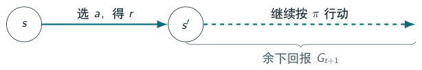
Bellman 方程的两段。实线是第一步：在 s s s a a a r r r s ′ s' s ′ s ′ s' s ′ π \pi π G t + 1 G_{t+1} G t + 1 s ′ s' s ′ v π ( s ′ ) v_\pi(s') v π ( s ′ )
上式是 Bellman 期望方程。第 4 章用它更新整张价值表。第 5 章用一次转移近似它：若手里只有一次转移和一张估计表 V V V r + γ V ( s ′ ) r+\gamma V(s') r + γV ( s ′ )
备份（backup）指把后继状态的价值传回当前状态的一步计算；把这一步画成树，叫备份图。把第 ③ 步展开成求和，就是
v π ( s ) = ∑ a π ( a ∣ s ) ∑ s ′ , r p ( s ′ , r ∣ s , a ) [ r + γ v π ( s ′ ) ] \boxed{\,v_\pi(s)=\sum_a\pi(a\mid s)\sum_{s',r}p(s',r\mid s,a)\,[r+\gamma v_\pi(s')]\,} v π ( s ) = a ∑ π ( a ∣ s ) s ′ , r ∑ p ( s ′ , r ∣ s , a ) [ r + γ v π ( s ′ )]
备份图从上往下读，根是此刻给定的状态，第一层分枝的概率是 π ( a ∣ s ) \pi(a\mid s) π ( a ∣ s ) p ( s ′ , r ∣ s , a ) p(s',r\mid s,a) p ( s ′ , r ∣ s , a ) r + γ v π ( s ′ ) r+\gamma v_\pi(s') r + γ v π ( s ′ ) s ′ s' s ′ π 0 \pi_0 π 0 v π 0 ( S 4 ) = 10 / 19 v_{\pi_0}(\mathrm{S4})=10/19 v π 0 ( S4 ) = 10/19
. 1 × ( 1 + . 9 × 0 ) + . 9 × ( 0 + . 9 × 10 19 ) = 10 19 . .1\times(1+.9\times0)+.9\times\Bigl(0+.9\times\tfrac{10}{19}\Bigr)=\tfrac{10}{19}. .1 × ( 1 + .9 × 0 ) + .9 × ( 0 + .9 × 19 10 ) = 19 10 .
这种画法是全课备份图的模板。第 4 章的动态规划、第 5 章的蒙特卡洛与时序差分都画成这样的树，区别只在叶子的值从哪里来。
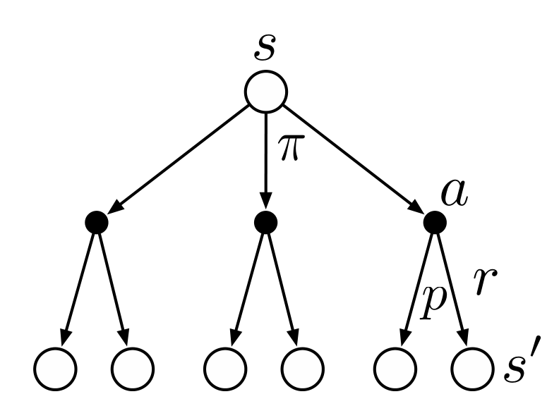
v π v_\pi v π s s s π \pi π p p p ( s ′ , r ) (s',r) ( s ′ , r ) r + γ v π ( s ′ ) r+\gamma v_\pi(s') r + γ v π ( s ′ ) p p p π \pi π v π ( s ) v_\pi(s) v π ( s ) v π v_\pi v π
打滑后的子树与整棵树同形，所以打滑分支只需读 γ u \gamma u γ u u = v π 0 ( S 4 ) u=v_{\pi_0}(\mathrm{S4}) u = v π 0 ( S4 ) . 1 .1 .1 1 1 1 . 9 .9 .9 γ u \gamma u γ u π 0 \pi_0 π 0
u = . 1 × 1 ⏟ 脱困 + . 9 × γ u ⏟ 打滑后的子树 ⟹ u = . 1 1 − . 81 = 10 19 ≈ . 526 , v π 0 ( S 7 ) = γ u = 9 19 . u=\underbrace{.1\times1}_{\text{脱困}}+\underbrace{.9\times\gamma u}_{\text{打滑后的子树}}
\quad\Longrightarrow\quad u=\frac{.1}{1-.81}=\frac{10}{19}\approx.526,\qquad v_{\pi_0}(\mathrm{S7})=\gamma u=\frac9{19}. u = 脱困 .1 × 1 + 打滑后的子树 .9 × γ u ⟹ u = 1 − .81 .1 = 19 10 ≈ .526 , v π 0 ( S7 ) = γ u = 19 9 .
递推式里的两个 . 9 .9 .9 . 81 .81 .81 u u u
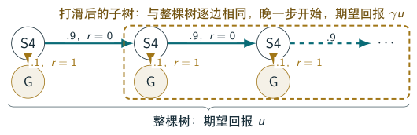
S4 的未来是一棵自相似的树。从左往右读，每个 S4 节点以 .9、奖励 0 打滑到下一个 S4，以 .1、奖励 1 落到 G。下方大括号是整棵树，期望回报为 u u u γ u \gamma u γ u u = . 1 + . 9 γ u u=.1+.9\gamma u u = .1 + .9 γ u
作为对照，按打滑次数 k k k k k k . 9 k ( . 1 ) .9^k(.1) . 9 k ( .1 ) γ k \gamma^k γ k
u = . 1 × 1 + . 09 × . 9 + . 081 × . 81 + ⋯ = ∑ k ≥ 0 . 1 ( . 81 ) k = 10 19 . u=.1\times1+.09\times.9+.081\times.81+\cdots=\sum_{k\ge0}.1(.81)^k=\frac{10}{19}. u = .1 × 1 + .09 × .9 + .081 × .81 + ⋯ = k ≥ 0 ∑ .1 ( .81 ) k = 19 10 .
两种分组算出同一个数，说明递推没有遗漏任何路径。第 5 章的蒙特卡洛方法沿级数逐条平均实际回报，时序差分方法则像递推式那样借用后继状态的估计。若将右边的真值换成任意一张接续表 V V V
( T π V ) ( s ) = ∑ a π ( a ∣ s ) ∑ s ′ , r p ( s ′ , r ∣ s , a ) [ r + γ V ( s ′ ) ] . (T_\pi V)(s)=\sum_a\pi(a\mid s)\sum_{s',r}p(s',r\mid s,a)[r+\gamma V(s')]. ( T π V ) ( s ) = a ∑ π ( a ∣ s ) s ′ , r ∑ p ( s ′ , r ∣ s , a ) [ r + γV ( s ′ )] .
T π T_\pi T π π \pi π T π v π = v π T_\pi v_\pi=v_\pi T π v π = v π
左图是泥地网格，格中数字是解 ( I − γ P π ) v = r π (I-\gamma P_\pi)v=r_\pi ( I − γ P π ) v = r π π ( a ∣ s ) \pi(a\mid s) π ( a ∣ s ) q π ( s , a ) q_\pi(s,a) q π ( s , a ) p p p r + γ v π ( s ′ ) r+\gamma v_\pi(s') r + γ v π ( s ′ ) 10 / 19 10/19 10/19 π ~ \tilde\pi π ~ γ \gamma γ
易错 第 ③ 步需要状态的信息完整。若 S4 与 S6 共用一个观测 x x x x x x . 1 .1 .1 0 0 0 . 05 .05 .05 x x x
选读：随机策略的一步备份
作为随机策略的对照，暂以 π ~ \tilde\pi π ~ π 0 \pi_0 π 0 . 7 .7 .7 . 3 .3 .3 V V V v v v V ( S 4 ) = . 5 V(\mathrm{S4})=.5 V ( S4 ) = .5 V ( S 7 ) = . 4 V(\mathrm{S7})=.4 V ( S7 ) = .4 V ( G ) = 0 V(\mathrm G)=0 V ( G ) = 0 γ = . 9 \gamma=.9 γ = .9 . 07 .07 .07 . 63 .63 .63 . 03 .03 .03 . 27 .27 .27
. 07 ( 1 ) + . 63 ( . 9 × . 5 ) + . 03 ( . 9 × . 4 ) + . 27 ( . 9 × . 5 ) = . 4858. .07(1)+.63(.9\times.5)+.03(.9\times.4)+.27(.9\times.5)=.4858. .07 ( 1 ) + .63 ( .9 × .5 ) + .03 ( .9 × .4 ) + .27 ( .9 × .5 ) = .4858.
四项依次为 . 07 .07 .07 . 2835 .2835 .2835 . 0108 .0108 .0108 . 1215 .1215 .1215 V V V v π ~ v_{\tilde\pi} v π ~ v π ~ ( S 4 ) v_{\tilde\pi}(\mathrm{S4}) v π ~ ( S4 )
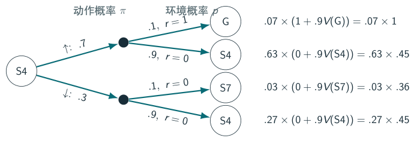
随机策略 π ~ \tilde\pi π ~ r + . 9 V ( s ′ ) r+.9V(s') r + .9 V ( s ′ ) . 07 × 1 .07\times1 .07 × 1 . 63 × . 45 .63\times.45 .63 × .45 . 03 × . 36 .03\times.36 .03 × .36 . 27 × . 45 .27\times.45 .27 × .45
选读：Bellman 方程的矩阵形式
固定策略后，七个状态的 Bellman 方程构成一个线性系统。按策略对动作求和，得到非终止状态之间的转移矩阵与奖励向量：
P π ( s , s ′ ) = ∑ a π ( a ∣ s ) ∑ r p ( s ′ , r ∣ s , a ) , r π ( s ) = ∑ a π ( a ∣ s ) r ( s , a ) . P_\pi(s,s')=\sum_a\pi(a\mid s)\sum_rp(s',r\mid s,a),\qquad r_\pi(s)=\sum_a\pi(a\mid s)r(s,a). P π ( s , s ′ ) = a ∑ π ( a ∣ s ) r ∑ p ( s ′ , r ∣ s , a ) , r π ( s ) = a ∑ π ( a ∣ s ) r ( s , a ) .
通往 G \mathrm G G
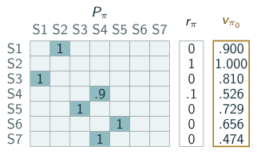
旧策略 π 0 \pi_0 π 0 P π P_\pi P π r π r_\pi r π v π 0 v_{\pi_0} v π 0 10 / 19 10/19 10/19 9 / 19 9/19 9/19
Bellman 方程成为
v π = r π + γ P π v π , ( I − γ P π ) v π = r π . v_\pi=r_\pi+\gamma P_\pi v_\pi,\qquad (I-\gamma P_\pi)v_\pi=r_\pi. v π = r π + γ P π v π , ( I − γ P π ) v π = r π .
逐行读这个方程：S4 一行是 v ( S 4 ) = . 1 + . 9 × . 9 v ( S 4 ) v(\mathrm{S4})=.1+.9\times.9\,v(\mathrm{S4}) v ( S4 ) = .1 + .9 × .9 v ( S4 ) v ( S 7 ) = . 9 v ( S 4 ) v(\mathrm{S7})=.9\,v(\mathrm{S4}) v ( S7 ) = .9 v ( S4 ) v ( S 2 ) = 1 v(\mathrm{S2})=1 v ( S2 ) = 1 v π 0 v_{\pi_0} v π 0 10 / 19 10/19 10/19 9 / 19 9/19 9/19
γ < 1 \gamma<1 γ < 1 v π v_\pi v π P π P_\pi P π x x x ∥ γ P π x ∥ ∞ ≤ γ ∥ x ∥ ∞ \|\gamma P_\pi x\|_\infty\le\gamma\|x\|_\infty ∥ γ P π x ∥ ∞ ≤ γ ∥ x ∥ ∞ γ P π \gamma P_\pi γ P π γ < 1 \gamma<1 γ < 1 I − γ P π I-\gamma P_\pi I − γ P π ( I − γ P π ) − 1 = ∑ k ≥ 0 ( γ P π ) k (I-\gamma P_\pi)^{-1}=\sum_{k\ge0}(\gamma P_\pi)^k ( I − γ P π ) − 1 = ∑ k ≥ 0 ( γ P π ) k v π = ( I − γ P π ) − 1 r π v_\pi=(I-\gamma P_\pi)^{-1}r_\pi v π = ( I − γ P π ) − 1 r π
选读：折扣访问次数
上面的解 v π = ( I − γ P π ) − 1 r π v_\pi=(I-\gamma P_\pi)^{-1}r_\pi v π = ( I − γ P π ) − 1 r π d 0 ⊤ v π = [ d 0 ⊤ ( I − γ P π ) − 1 ] r π d_0^\top v_\pi=[d_0^\top(I-\gamma P_\pi)^{-1}]r_\pi d 0 ⊤ v π = [ d 0 ⊤ ( I − γ P π ) − 1 ] r π ∑ t γ t d 0 ⊤ P π t \sum_t\gamma^td_0^\top P_\pi^t ∑ t γ t d 0 ⊤ P π t s s s d 0 d_0 d 0 γ t \gamma^t γ t s s s π \pi π n π ( s , a ) n_\pi(s,a) n π ( s , a )
固定起点分布 d 0 d_0 d 0 π \pi π T T T ( s , a ) (s,a) ( s , a ) γ t \gamma^t γ t 折扣访问次数 n π ( s , a ) n_\pi(s,a) n π ( s , a ) d 0 d_0 d 0
n π ( s , a ) = ∑ t ≥ 0 γ t Pr d 0 , π ( S t = s , A t = a , t < T ) , J d 0 ( π ) = ∑ s , a n π ( s , a ) r ( s , a ) .
n_\pi(s,a)=\sum_{t\ge0}\gamma^t\Pr_{d_0,\pi}(S_t=s,A_t=a,\ t<T),\qquad J_{d_0}(\pi)=\sum_{s,a}n_\pi(s,a)\,r(s,a).
n π ( s , a ) = t ≥ 0 ∑ γ t d 0 , π Pr ( S t = s , A t = a , t < T ) , J d 0 ( π ) = s , a ∑ n π ( s , a ) r ( s , a ) .
右式的 J d 0 ( π ) J_{d_0}(\pi) J d 0 ( π ) t ≥ 1 t\ge1 t ≥ 1 . 9 t − 1 .9^{t-1} . 9 t − 1 γ = . 9 \gamma=.9 γ = .9 . 9 ( 1 + . 81 + . 8 1 2 + ⋯ ) = . 9 / . 19 = 90 / 19 .9(1+.81+.81^2+\cdots)=.9/.19=90/19 .9 ( 1 + .81 + .8 1 2 + ⋯ ) = .9/.19 = 90/19 n π 0 ( S 4 , ↑ ) = 90 / 19 n_{\pi_0}(\mathrm{S4},\uparrow)=90/19 n π 0 ( S4 , ↑ ) = 90/19 r ( S 4 , ↑ ) = . 1 r(\mathrm{S4},\uparrow)=.1 r ( S4 , ↑ ) = .1 9 / 19 9/19 9/19 9 / 19 9/19 9/19 a a a n π n_\pi n π d 0 ⊤ ( I − γ P π ) − 1 d_0^\top(I-\gamma P_\pi)^{-1} d 0 ⊤ ( I − γ P π ) − 1
S4 的折扣访问次数。横轴是时刻，时刻 0 在 S7；灰条是时刻 t t t γ t \gamma^t γ t 90 / 19 90/19 90/19
把期望回报按动作发生的位置重新求和，是将每个时刻的奖励先对当时的状态与动作取条件期望。Bellman 方程按下一步分解回报，折扣访问次数按各次访问分解同一个回报。这要交换期望与无穷和：状态有限、奖励有界且 γ < 1 \gamma<1 γ < 1 γ = 1 \gamma=1 γ = 1 n π n_\pi n π d π d_\pi d π n π n_\pi n π 逐步查看访问权重
3.4 动作价值与最优策略课件
3.3 节只评价了 π 0 \pi_0 π 0 π 0 \pi_0 π 0 π 0 \pi_0 π 0 q π 0 ( S 7 , a ) q_{\pi_0}(\mathrm{S7},a) q π 0 ( S7 , a ) G \mathrm G G 1 1 1 0 0 0
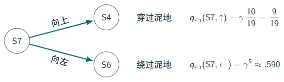
S7 两个首动作的价值。上面一枝向上穿过泥地，价值 γ ⋅ 10 / 19 = 9 / 19 ≈ . 474 \gamma\cdot10/19=9/19\approx.474 γ ⋅ 10/19 = 9/19 ≈ .474 γ 5 ≈ . 590 \gamma^5\approx.590 γ 5 ≈ .590 π 0 \pi_0 π 0 γ = . 9 \gamma=.9 γ = .9
动作价值固定首动作，状态价值按策略平均动作价值。v π ( s ) v_\pi(s) v π ( s ) s s s π \pi π q π ( s , a ) q_\pi(s,a) q π ( s , a ) s s s a a a π \pi π π ( a ∣ s ) = 0 \pi(a\mid s)=0 π ( a ∣ s ) = 0
v π ( s ) = ∑ a π ( a ∣ s ) q π ( s , a ) , q π ( s , a ) = ∑ s ′ , r p ( s ′ , r ∣ s , a ) [ r + γ v π ( s ′ ) ] . v_\pi(s)=\sum_a\pi(a\mid s)q_\pi(s,a),\qquad q_\pi(s,a)=\sum_{s',r}p(s',r\mid s,a)[r+\gamma v_\pi(s')]. v π ( s ) = a ∑ π ( a ∣ s ) q π ( s , a ) , q π ( s , a ) = s ′ , r ∑ p ( s ′ , r ∣ s , a ) [ r + γ v π ( s ′ )] .
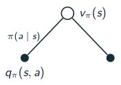
从状态价值到动作价值的回溯图。空心圆是状态，实心点是状态动作对。从上往下读，v π ( s ) v_\pi(s) v π ( s ) π ( a ∣ s ) \pi(a\mid s) π ( a ∣ s ) v π ( s ) v_\pi(s) v π ( s ) q π ( s , a ) q_\pi(s,a) q π ( s , a )
左式由策略选择首动作，按动作概率平均各自的价值；右式首动作已指定，环境产生后果，此后执行 π \pi π π 0 \pi_0 π 0 v π 0 ( S 7 ) = q π 0 ( S 7 , ↑ ) v_{\pi_0}(\mathrm{S7})=q_{\pi_0}(\mathrm{S7},\uparrow) v π 0 ( S7 ) = q π 0 ( S7 , ↑ ) q π 0 ( S 7 , ← ) = . 9 v π 0 ( S 6 ) = . 59049 q_{\pi_0}(\mathrm{S7},\leftarrow)=.9v_{\pi_0}(\mathrm{S6})=.59049 q π 0 ( S7 , ← ) = .9 v π 0 ( S6 ) = .59049
选读：动作价值的 Bellman 方程
为了计算 q π q_\pi q π G t = R t + 1 + γ G t + 1 G_t=R_{t+1}+\gamma G_{t+1} G t = R t + 1 + γ G t + 1
q π ( s , a ) = ∑ s ′ , r p ( s ′ , r ∣ s , a ) [ r + γ E π [ G t + 1 ∣ s , a , s ′ , r ] ] . q_\pi(s,a)=\sum_{s',r}p(s',r\mid s,a)\left[r+\gamma\mathbb E_\pi[G_{t+1}\mid s,a,s',r]\right]. q π ( s , a ) = s ′ , r ∑ p ( s ′ , r ∣ s , a ) [ r + γ E π [ G t + 1 ∣ s , a , s ′ , r ] ] .
马尔可夫条件说明到达 s ′ s' s ′ v π ( s ′ ) v_\pi(s') v π ( s ′ ) q π ( s , a ) = ∑ s ′ , r p ( s ′ , r ∣ s , a ) [ r + γ v π ( s ′ ) ] q_\pi(s,a)=\sum_{s',r}p(s',r\mid s,a)[r+\gamma v_\pi(s')] q π ( s , a ) = ∑ s ′ , r p ( s ′ , r ∣ s , a ) [ r + γ v π ( s ′ )]
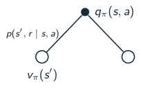
从动作价值到下一状态价值的回溯图。实心点是指定的状态动作对，空心圆是下一状态。从上往下读，环境按 p ( s ′ , r ∣ s , a ) p(s',r\mid s,a) p ( s ′ , r ∣ s , a ) q π ( s , a ) q_\pi(s,a) q π ( s , a ) r + γ v π ( s ′ ) r+\gamma v_\pi(s') r + γ v π ( s ′ ) v π v_\pi v π q π q_\pi q π q π q_\pi q π
如果保存的是动作价值，把 v π ( s ′ ) = ∑ a ′ π ( a ′ ∣ s ′ ) q π ( s ′ , a ′ ) v_\pi(s')=\sum_{a'}\pi(a'\mid s')q_\pi(s',a') v π ( s ′ ) = ∑ a ′ π ( a ′ ∣ s ′ ) q π ( s ′ , a ′ )
q π ( s , a ) = ∑ s ′ , r p ( s ′ , r ∣ s , a ) [ r + γ ∑ a ′ π ( a ′ ∣ s ′ ) q π ( s ′ , a ′ ) ] . q_\pi(s,a)=\sum_{s',r}p(s',r\mid s,a)\left[r+\gamma\sum_{a'}\pi(a'\mid s')q_\pi(s',a')\right]. q π ( s , a ) = s ′ , r ∑ p ( s ′ , r ∣ s , a ) [ r + γ a ′ ∑ π ( a ′ ∣ s ′ ) q π ( s ′ , a ′ ) ] .
q π q_\pi q π a a a a ′ a' a ′
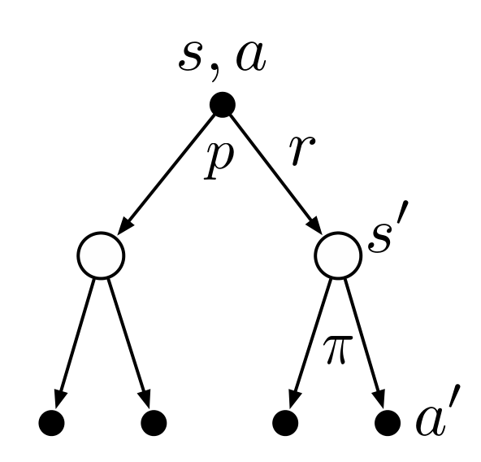
q π q_\pi q π ( s , a ) (s,a) ( s , a ) p p p ( s ′ , r ) (s',r) ( s ′ , r ) s ′ s' s ′ π \pi π a ′ a' a ′ s ′ s' s ′ π \pi π q π ( s ′ , a ′ ) q_\pi(s',a') q π ( s ′ , a ′ ) r r r p p p q π q_\pi q π ( S 4 , ↑ ) (\mathrm{S4},\uparrow) ( S4 , ↑ ) q π 0 ( S 4 , ↑ ) q_{\pi_0}(\mathrm{S4},\uparrow) q π 0 ( S4 , ↑ )
在 ( S 4 , ↑ ) (\mathrm{S4},\uparrow) ( S4 , ↑ ) G \mathrm G G π 0 \pi_0 π 0 q π 0 ( S 4 , ↑ ) q_{\pi_0}(\mathrm{S4},\uparrow) q π 0 ( S4 , ↑ )
把 S7 的动作改为向左，只有 S7 一格的价值上升。前面算出 q π 0 ( S 7 , ← ) = . 590 > v π 0 ( S 7 ) = . 474 q_{\pi_0}(\mathrm{S7},\leftarrow)=.590>v_{\pi_0}(\mathrm{S7})=.474 q π 0 ( S7 , ← ) = .590 > v π 0 ( S7 ) = .474 π 1 \pi_1 π 1 π 0 \pi_0 π 0 ( I − γ P π ) v π = r π (I-\gamma P_\pi)v_\pi=r_\pi ( I − γ P π ) v π = r π γ = . 9 \gamma=.9 γ = .9
策略
S1
S2
S3
S4
S5
S6
S7
π 0 \pi_0 π 0 .900
1.000
.810
.526
.729
.656
.474
π 1 \pi_1 π 1 .900
1.000
.810
.526
.729
.656
.590
变化
0
0
0
0
0
0
+.117
其余六格不变，因为在两条策略下，从它们出发的轨迹都不经过 S7。S7 的新值就是 q π 0 ( S 7 , ← ) q_{\pi_0}(\mathrm{S7},\leftarrow) q π 0 ( S7 , ← ) π 1 \pi_1 π 1 π 0 \pi_0 π 0 第 4 章 的策略改进定理证明。
预测评价给定策略，控制在策略之间比较起点期望回报。给定初始分布 d 0 d_0 d 0
J d 0 ( π ) = E S 0 ∼ d 0 , π [ G 0 ] = ∑ s d 0 ( s ) v π ( s ) . J_{d_0}(\pi)=\mathbb E_{S_0\sim d_0,\pi}[G_0]=\sum_s d_0(s)v_\pi(s). J d 0 ( π ) = E S 0 ∼ d 0 , π [ G 0 ] = s ∑ d 0 ( s ) v π ( s ) .
泥地任务总从 S 7 \mathrm{S7} S7 d 0 ( S 7 ) = 1 d_0(\mathrm{S7})=1 d 0 ( S7 ) = 1 J d 0 ( π ) = v π ( S 7 ) J_{d_0}(\pi)=v_\pi(\mathrm{S7}) J d 0 ( π ) = v π ( S7 ) J γ , d 0 J_{\gamma,d_0} J γ , d 0 γ \gamma γ 预测 固定 π \pi π v π v_\pi v π q π q_\pi q π 控制 允许选择策略，使 J d 0 ( π ) J_{d_0}(\pi) J d 0 ( π ) π 1 \pi_1 π 1 π 0 \pi_0 π 0 . 590 > . 474 .590>.474 .590 > .474
问题
给定什么
求什么
预测
固定策略 π \pi π
v π v_\pi v π q π q_\pi q π
控制
同一任务，允许选择策略
使 J d 0 ( π ) J_{d_0}(\pi) J d 0 ( π )
J d 0 J_{d_0} J d 0
选读：同一起点的预测与控制
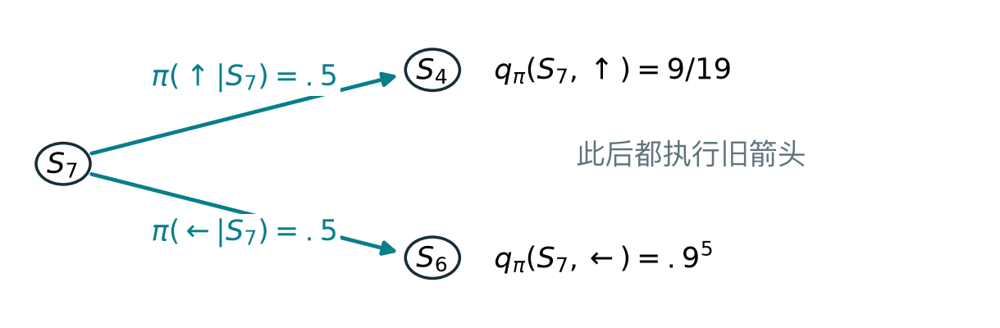
同一 S7 的两种首动作对应两个动作价值；状态价值再按策略概率平均它们。
令 x x x π 0 \pi_0 π 0 x x x p p p
v π x ( S 7 ) = ( 1 − x ) ⋅ 9 19 + x γ 5 . v_{\pi_x}(\mathrm{S7})=(1-x)\cdot\tfrac9{19}+x\gamma^5. v π x ( S7 ) = ( 1 − x ) ⋅ 19 9 + x γ 5 .
例如各以一半概率选择上或左时，状态价值为 .532087。这里改变的是同一任务中的行动概率，环境规律和回报定义都不变。
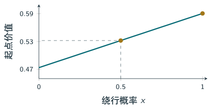
S7 的起点价值随绕行概率变化。横轴是在 S7 选向左的概率 x x x x = 0 x=0 x = 0 x = 1 x=1 x = 1
同一条直线上，评价读出给定策略的起点价值，控制找直线的最高点。把横坐标固定、求纵坐标，就是策略评价；允许改变横坐标、在这族策略中找最大值，就是一个受限控制问题，γ = . 9 \gamma=.9 γ = .9 x ∗ = 1 x^*=1 x ∗ = 1
若学习者只看从 S7 向上的示范，另一条路线的动作价值仍有定义，却不能由这些示范确定。考虑两种环境，它们只在 S6 向左时有差别。原地图里一步就能走到 S5，再沿箭头抵达终点。另一张地图把这一步改成湿路，每次有 . 1 .1 .1 9 / 19 9/19 9/19 . 9 5 = . 59049 .9^5=.59049 . 9 5 = .59049 k k k 6 + k 6+k 6 + k 1 1 1
∑ k = 0 ∞ ( . 9 ) k ( . 1 ) ( . 9 ) 5 + k = . 9 5 . 1 1 − . 9 × . 9 ≈ . 31078. \sum_{k=0}^{\infty}(.9)^k(.1)\, (.9)^{5+k}=.9^5\frac{.1}{1-.9\times.9}\approx.31078. k = 0 ∑ ∞ ( .9 ) k ( .1 ) ( .9 ) 5 + k = . 9 5 1 − .9 × .9 .1 ≈ .31078.
上式中，( . 9 ) k ( . 1 ) (.9)^k(.1) ( .9 ) k ( .1 ) k k k ( . 9 ) 5 + k (.9)^{5+k} ( .9 ) 5 + k
状态是否可观测、环境模型是否可用、数据覆盖了哪些动作，分别限制不同的计算。若每次在 S7 都向上，轨迹中不会出现向左的转移，即使完整格名始终可见。评价指定向左的策略，需要它选择该动作时的奖励和后继状态。准确的已知模型可以提供这一条件分布；仅靠向上路线的记录、且不对未知规律另加假设，不能确定向左策略的价值。第 6 章的离策略评价改用能在起点试走两条路线的行为策略。在目标策略可达的状态，对它有正概率选择的动作，行为策略也须给出正的采样概率。
有限折扣 MDP 中定义
v ∗ ( s ) = max π v π ( s ) , q ∗ ( s , a ) = max π q π ( s , a ) . v_*(s)=\max_\pi v_\pi(s),\qquad q_*(s,a)=\max_\pi q_\pi(s,a). v ∗ ( s ) = π max v π ( s ) , q ∗ ( s , a ) = π max q π ( s , a ) .
这里的最大是对一切允许的策略取的，包括随机策略和依赖历史的策略。状态与动作有限、奖励有界、0 ≤ γ < 1 0\le\gamma<1 0 ≤ γ < 1 π ∗ \pi_* π ∗ s s s v π ∗ ( s ) = v ∗ ( s ) v_{\pi_*}(s)=v_*(s) v π ∗ ( s ) = v ∗ ( s ) d 0 d_0 d 0 J d 0 J_{d_0} J d 0 d 0 d_0 d 0 π 1 \pi_1 π 1 v ∗ v_* v ∗ v ∗ ( S 7 ) = . 59049 v_*(\mathrm{S7})=.59049 v ∗ ( S7 ) = .59049 π 0 \pi_0 π 0 γ < 1 \gamma<1 γ < 1 γ = 1 \gamma=1 γ = 1
只要求对某个 d 0 d_0 d 0 d 0 d_0 d 0
把期望方程里按策略求平均换成对动作取最大，就得到最优价值的方程，即 Bellman 最优方程：
v ∗ ( s ) = max a ∑ s ′ , r p ( s ′ , r ∣ s , a ) [ r + γ v ∗ ( s ′ ) ] , q ∗ ( s , a ) = ∑ s ′ , r p ( s ′ , r ∣ s , a ) [ r + γ max a ′ q ∗ ( s ′ , a ′ ) ] , \boxed{v_*(s)=\max_a\sum_{s',r}p(s',r\mid s,a)[r+\gamma v_*(s')]},\qquad q_*(s,a)=\sum_{s',r}p(s',r\mid s,a)\Bigl[r+\gamma\max_{a'}q_*(s',a')\Bigr], v ∗ ( s ) = a max s ′ , r ∑ p ( s ′ , r ∣ s , a ) [ r + γ v ∗ ( s ′ )] , q ∗ ( s , a ) = s ′ , r ∑ p ( s ′ , r ∣ s , a ) [ r + γ a ′ max q ∗ ( s ′ , a ′ ) ] ,
并且 v ∗ ( s ) = max a q ∗ ( s , a ) v_*(s)=\max_aq_*(s,a) v ∗ ( s ) = max a q ∗ ( s , a ) v ∗ ( s ′ ) v_*(s') v ∗ ( s ′ ) π \pi π . 9 × 10 / 19 .9\times10/19 .9 × 10/19 . 9 × . 9 4 .9\times.9^4 .9 × . 9 4 π 0 \pi_0 π 0 v π v_\pi v π v ∗ v_* v ∗ v π , q π v_\pi,q_\pi v π , q π V , Q V,Q V , Q
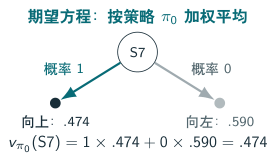
Bellman 期望方程在 S7 的读法。两枝是两个首动作，枝旁是 π 0 \pi_0 π 0 π 0 \pi_0 π 0 v π 0 ( S 7 ) = 1 × . 474 + 0 × . 590 = . 474 v_{\pi_0}(\mathrm{S7})=1\times.474+0\times.590=.474 v π 0 ( S7 ) = 1 × .474 + 0 × .590 = .474
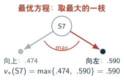
Bellman 最优方程在 S7 的读法。同样两枝，红色弧标出取最大：v ∗ ( S 7 ) = max { . 474 , . 590 } = . 590 v_*(\mathrm{S7})=\max\{.474,.590\}=.590 v ∗ ( S7 ) = max { .474 , .590 } = .590
选读：泥地的最优价值
泥地的最优策略与 π 0 \pi_0 π 0 γ = . 9 \gamma=.9 γ = .9 v ∗ ( G ) = 0 v_*(\mathrm G)=0 v ∗ ( G ) = 0 1 1 1 . 9 .9 .9 . 81 .81 .81 . 729 .729 .729 . 6561 .6561 .6561 u = . 1 + . 81 u u=.1+.81u u = .1 + .81 u u = 10 / 19 ≈ . 526 u=10/19\approx.526 u = 10/19 ≈ .526 . 1 .1 .1 . 09 v ∗ ( S 7 ) + . 81 u ≈ . 479 .09\,v_*(\mathrm{S7})+.81u\approx.479 .09 v ∗ ( S7 ) + .81 u ≈ .479 . 9 u ≈ . 474 .9u\approx.474 .9 u ≈ .474
q ∗ ( S 7 , ↑ ) = . 9 × 10 19 = 9 19 ≈ . 474 , q ∗ ( S 7 , ← ) = . 9 × . 9 4 = . 59049 , q ∗ ( S 7 , ↓ ) = q ∗ ( S 7 , → ) = . 9 v ∗ ( S 7 ) ≈ . 531. q_*(\mathrm{S7},\uparrow)=.9\times\tfrac{10}{19}=\tfrac9{19}\approx.474,\qquad q_*(\mathrm{S7},\leftarrow)=.9\times.9^4=.59049,\qquad q_*(\mathrm{S7},\downarrow)=q_*(\mathrm{S7},\rightarrow)=.9\,v_*(\mathrm{S7})\approx.531. q ∗ ( S7 , ↑ ) = .9 × 19 10 = 19 9 ≈ .474 , q ∗ ( S7 , ← ) = .9 × . 9 4 = .59049 , q ∗ ( S7 , ↓ ) = q ∗ ( S7 , → ) = .9 v ∗ ( S7 ) ≈ .531.
S7 向下、向右撞边界留在原地，只是推迟一步，低于向左的 . 59049 .59049 .59049 v ∗ ( S 7 ) = . 59049 v_*(\mathrm{S7})=.59049 v ∗ ( S7 ) = .59049
3.5 有限期决策与剩余时间课件
期限有限时，S7 的最优首动作随剩余步数由向上变为向左。3.4 节得出 S7 应向左；若只剩 2 步，向左一分也拿不到。有限期任务只计未来 h h h G \mathrm G G h h h G \mathrm G G . 1 .1 .1 . 9 × . 1 = . 09 .9\times.1=.09 .9 × .1 = .09 . 9 5 = . 59049 .9^5=.59049 . 9 5 = .59049 π h ( a ∣ s ) \pi_h(a\mid s) π h ( a ∣ s ) ( s , h ) (s,h) ( s , h )
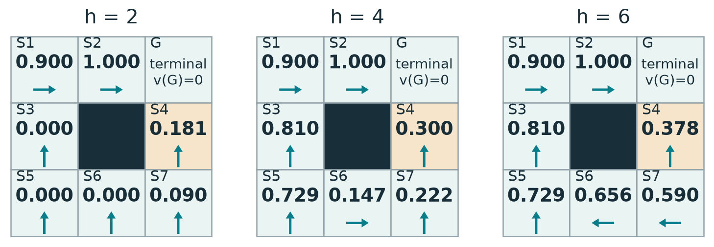
剩余 2、4、6 步时的最优价值与首动作。每格大字是 v ∗ , h v_{*,h} v ∗ , h h = 6 h=6 h = 6
三张图是泥地模型的有限期最优解：按泥地模型做 h h h γ = . 9 \gamma=.9 γ = .9 h = 2 h=2 h = 2 . 1 + . 9 × . 9 × . 1 ≈ . 181 .1+.9\times.9\times.1\approx.181 .1 + .9 × .9 × .1 ≈ .181 . 090 .090 .090 h = 4 h=4 h = 4 . 147 .147 .147 . 300 .300 .300 . 222 .222 .222 h = 6 h=6 h = 6 . 656 .656 .656 . 590 .590 .590 . 378 .378 .378 h h h h − 1 h-1 h − 1 v ∗ , h − 1 v_{*,h-1} v ∗ , h − 1
选读：含剩余步数的状态
把剩余步数放进状态，有限期限价值可逐层递推。规定最多再行动 h h h v ∗ , 0 ( s ) = 0 v_{*,0}(s)=0 v ∗ , 0 ( s ) = 0
v ∗ , h ( s ) = max a ∑ s ′ , r p ( s ′ , r ∣ s , a ) [ r + γ v ∗ , h − 1 ( s ′ ) ] . v_{*,h}(s)=\max_a\sum_{s',r}p(s',r\mid s,a)[r+\gamma v_{*,h-1}(s')]. v ∗ , h ( s ) = a max s ′ , r ∑ p ( s ′ , r ∣ s , a ) [ r + γ v ∗ , h − 1 ( s ′ )] .
这里的 h h h h = 1 h=1 h = 1
h h h 先上
先左
最优首动作
2
.0900
0
上
4
.2219
.0729
上
6
.3085
.5905
左
表中比较的是第一个动作，此后按对应剩余时间的最优策略行动。h = 4 h=4 h = 4 . 1 .1 .1 . 9 3 × . 1 = . 0729 .9^3\times.1=.0729 . 9 3 × .1 = .0729 ( s , h ) (s,h) ( s , h ) s s s
现在让智能体实际走两步，观测到 S 7 → 0 S 4 → 0 S 4 \mathrm{S7}\xrightarrow{0}\mathrm{S4}\xrightarrow{0}\mathrm{S4} S7 0 S4 0 S4 v π , 0 ( S 4 ) = 0 v_{\pi,0}(\mathrm{S4})=0 v π , 0 ( S4 ) = 0
另一种约定仍以抵达 G \mathrm G G Pardo 等，Time Limits in Reinforcement Learning
选读：时限与剩余时间的实验
Pardo 等把本节的结论放到连续控制任务中检验。设定 ：MuJoCo 的 Hopper-v1，单足机器人尽量向前移动，每回合时限 300 步。标准 PPO 只接收环境给出的观测；时间感知版本 TA-PPO 在观测后面拼接一个表示剩余时间的标量，归一化到 [ − 1 , 1 ] [-1,1] [ − 1 , 1 ] 测量 ：时限到达时机器人的平均最后姿态；作者另在时限为 1000 步的多个 MuJoCo 任务上比较训练曲线，折扣取 .99 与 1，时间感知版本在折扣较大时优势更明显。数值 ：能读到剩余时间的策略学会在截止前向前跃出并倒下，以争取最后一点前进距离，作者称之为冲线；PPO 学不到这一动作，而且折扣较大时训练很不稳定。
改变了哪个认识 ：第一，时限若属于任务，剩余时间就是状态的一部分。否则同一观测对应不同的最优动作，这与泥地中 h h h 1 0 6 10^6 1 0 6 第 5 章 5.2 节 还会用到：时序差分更新在截断处保留下一状态的价值，只在终止处把它取为零。以上实验细节已对照论文 arXiv 第 4 版第 2、3 节与图 3、图 5 核过。Pardo 等，ICML 2018，图 5
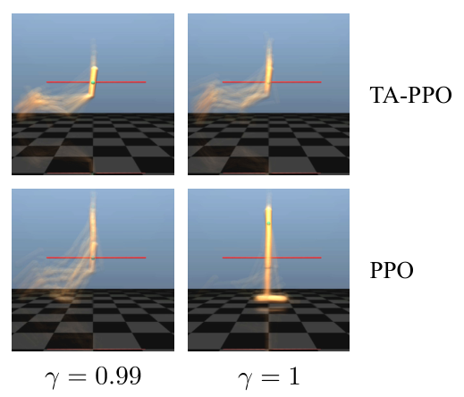
Hopper 在时限到达时的平均姿态。上排是读到剩余时间的 TA-PPO，下排是只读物理观测的 PPO；两列为不同折扣因子，红线是高度终止阈值（0.7 米）。图是最后姿态的平均图像，单张图读不出整条运动轨迹。原图取自 Pardo 等（2018）图 5。
3.6 回报准则与奖励塑形课件
回报准则与奖励塑形有一个共同的问题：改动目标会不会改变最优策略。3.5 节里，剩余步数改变了 S7 的首动作。现在泥地不变，只换折扣因子 γ \gamma γ π 0 \pi_0 π 0
q ( S 7 , ↑ ) = . 1 γ 1 − . 9 γ , q ( S 7 , ← ) = γ 5 . q(\mathrm{S7},\uparrow)=\frac{.1\,\gamma}{1-.9\gamma},\qquad q(\mathrm{S7},\leftarrow)=\gamma^5. q ( S7 , ↑ ) = 1 − .9 γ .1 γ , q ( S7 , ← ) = γ 5 .
向上一枝来自 S4 的自环：S4 的价值满足 u = . 1 + . 9 γ u u=.1+.9\gamma u u = .1 + .9 γ u u = . 1 / ( 1 − . 9 γ ) u=.1/(1-.9\gamma) u = .1/ ( 1 − .9 γ ) γ \gamma γ 1 1 1
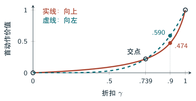
S7 两个首动作的价值随折扣变化。横轴是折扣 γ \gamma γ γ = 0 \gamma=0 γ = 0 γ ≈ . 739 \gamma\approx.739 γ ≈ .739 γ = 1 \gamma=1 γ = 1 0 < γ < . 739 0<\gamma<.739 0 < γ < .739 γ = . 9 \gamma=.9 γ = .9
γ \gamma γ 更好的首动作
γ = 0 \gamma=0 γ = 0 两条都等于 0 0 0
0 < γ < . 739 0<\gamma<.739 0 < γ < .739 向上
. 739 < γ < 1 .739<\gamma<1 .739 < γ < 1 向左（本章 γ = . 9 \gamma=.9 γ = .9
γ = 1 \gamma=1 γ = 1 两条都等于 1 1 1
交点可以算出来。γ = 0 \gamma=0 γ = 0 γ > 0 \gamma>0 γ > 0 . 1 γ / ( 1 − . 9 γ ) = γ 5 .1\gamma/(1-.9\gamma)=\gamma^5 .1 γ / ( 1 − .9 γ ) = γ 5 γ \gamma γ 9 γ 5 − 10 γ 4 + 1 = 0 9\gamma^5-10\gamma^4+1=0 9 γ 5 − 10 γ 4 + 1 = 0 ( γ − 1 ) ( 9 γ 4 − γ 3 − γ 2 − γ − 1 ) (\gamma-1)(9\gamma^4-\gamma^3-\gamma^2-\gamma-1) ( γ − 1 ) ( 9 γ 4 − γ 3 − γ 2 − γ − 1 ) ( 0 , 1 ) (0,1) ( 0 , 1 ) γ ≈ . 7394 \gamma\approx.7394 γ ≈ .7394 . 221 .221 .221 γ = 1 \gamma=1 γ = 1 γ = . 9 \gamma=.9 γ = .9 9 / 19 ≈ . 474 9/19\approx.474 9/19 ≈ .474 . 9 5 ≈ . 590 .9^5\approx.590 . 9 5 ≈ .590 γ \gamma γ γ \gamma γ γ \gamma γ
改的若是奖励本身，大多数改动会改变任务。势差塑形是一个例外：它在每步奖励上加 F ( s , s ′ ) = γ Φ ( s ′ ) − Φ ( s ) F(s,s')=\gamma\Phi(s')-\Phi(s) F ( s , s ′ ) = γ Φ ( s ′ ) − Φ ( s ) − Φ ( s ) -\Phi(s) − Φ ( s ) 第 1 章 1.3 的走廊检验它。
选读：排序反转的算例
两个更小的例子中，策略的排序都在 γ = 1 2 \gamma=\tfrac12 γ = 2 1
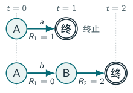
两步内终止的任务。时间从左往右为 t = 0 , 1 , 2 t=0,1,2 t = 0 , 1 , 2 a a a R 1 = 1 R_1=1 R 1 = 1 b b b R 1 = 0 R_1=0 R 1 = 0 R 2 = 2 R_2=2 R 2 = 2 1 1 1 2 γ 2\gamma 2 γ γ = 1 2 \gamma=\tfrac12 γ = 2 1 《强化学习问题与大世界中的持续学习》 中的两步任务重画。
走 a a a 1 1 1 b b b 0 + 2 γ 0+2\gamma 0 + 2 γ γ = . 4 \gamma=.4 γ = .4 a a a γ = 1 \gamma=1 γ = 1 b b b π A \pi_A π A π B \pi_B π B 0 , 3 , 0 , 3 , … 0,3,0,3,\ldots 0 , 3 , 0 , 3 , … 0 ≤ γ < 1 0\le\gamma<1 0 ≤ γ < 1
J A = 1 1 − γ , J B = 3 γ 1 − γ 2 . J_A=\frac1{1-\gamma},\qquad J_B=\frac{3\gamma}{1-\gamma^2}. J A = 1 − γ 1 , J B = 1 − γ 2 3 γ .
两边同乘 1 − γ 2 1-\gamma^2 1 − γ 2 1 + γ 1+\gamma 1 + γ 3 γ 3\gamma 3 γ γ = 1 2 \gamma=\tfrac12 γ = 2 1 π A \pi_A π A π B \pi_B π B γ \gamma γ a a a b b b γ = 1 \gamma=1 γ = 1 γ < 1 \gamma<1 γ < 1
只走一趟还是反复走，也会改变排序。设同一起点的左路奖励序列为 ( 1 ) (1) ( 1 ) ( 0 , 4 ) (0,4) ( 0 , 4 ) 4 γ 4\gamma 4 γ γ = 1 / 4 \gamma=1/4 γ = 1/4 4 γ / ( 1 + γ ) 4\gamma/(1+\gamma) 4 γ / ( 1 + γ ) γ = 1 / 3 \gamma=1/3 γ = 1/3 γ = . 30 \gamma=.30 γ = .30 1.20 1.20 1.20 . 923 .923 .923
选读：三种回报准则
比较策略的准则不止一种。常用的三种各要一个条件才有定义：回报的期望有限，γ < 1 \gamma<1 γ < 1
J e p , d 0 ( π ) = E d 0 , π [ ∑ t = 0 T − 1 R t + 1 ] , J γ , d 0 ( π ) = E d 0 , π [ ∑ t = 0 ∞ γ t R t + 1 ] , r d 0 ( π ) = lim N → ∞ 1 N E d 0 , π [ ∑ t = 0 N − 1 R t + 1 ] . \begin{aligned}
J_{\mathrm{ep},d_0}(\pi)&=\mathbb E_{d_0,\pi}\Bigl[\sum_{t=0}^{T-1}R_{t+1}\Bigr],\\
J_{\gamma,d_0}(\pi)&=\mathbb E_{d_0,\pi}\Bigl[\sum_{t=0}^{\infty}\gamma^tR_{t+1}\Bigr],\\
r_{d_0}(\pi)&=\lim_{N\to\infty}\frac1N\,\mathbb E_{d_0,\pi}\Bigl[\sum_{t=0}^{N-1}R_{t+1}\Bigr].
\end{aligned} J ep , d 0 ( π ) J γ , d 0 ( π ) r d 0 ( π ) = E d 0 , π [ t = 0 ∑ T − 1 R t + 1 ] , = E d 0 , π [ t = 0 ∑ ∞ γ t R t + 1 ] , = N → ∞ lim N 1 E d 0 , π [ t = 0 ∑ N − 1 R t + 1 ] .
下标 ep 指回合准则，γ \gamma γ J d 0 J_{d_0} J d 0 J γ , d 0 J_{\gamma,d_0} J γ , d 0 γ = 1 \gamma=1 γ = 1 0 ≤ γ < 1 0\le\gamma<1 0 ≤ γ < 1 d 0 d_0 d 0
三种准则可以放在同一个量上比较：每一步的奖励在总评价里占多少权重。回合准则在终止前每步权重都是 1，终止后为 0；折扣准则的权重按 γ t \gamma^t γ t γ = . 9 \gamma=.9 γ = .9 1 / N 1/N 1/ N N → ∞ N\to\infty N → ∞ 1 / ( 1 − γ ) 1/(1-\gamma) 1/ ( 1 − γ )
选读：折扣与平均奖励
γ \gamma γ γ \gamma γ π \pi π r ( π ) = lim N → ∞ 1 N E π [ ∑ t = 0 N − 1 R t + 1 ] r(\pi)=\lim_{N\to\infty}\frac1N\mathbb E_\pi[\sum_{t=0}^{N-1}R_{t+1}] r ( π ) = lim N → ∞ N 1 E π [ ∑ t = 0 N − 1 R t + 1 ] h π h_\pi h π s s s ( I − P π ) h π = r π − r ( π ) 1 (I-P_\pi)h_\pi=r_\pi-r(\pi)\mathbf 1 ( I − P π ) h π = r π − r ( π ) 1 d π ⊤ h π = 0 d_\pi^\top h_\pi=0 d π ⊤ h π = 0 P π P_\pi P π d π d_\pi d π h π ( s ) = E π [ ∑ t ≥ 0 ( R t + 1 − r ( π ) ) ∣ S 0 = s ] h_\pi(s)=\mathbb E_\pi[\sum_{t\ge0}(R_{t+1}-r(\pi))\mid S_0=s] h π ( s ) = E π [ ∑ t ≥ 0 ( R t + 1 − r ( π )) ∣ S 0 = s ] γ \gamma γ
v π , γ ( s ) = r ( π ) 1 − γ + h π ( s ) + O ( 1 − γ ) . v_{\pi,\gamma}(s)=\frac{r(\pi)}{1-\gamma}+h_\pi(s)+O(1-\gamma). v π , γ ( s ) = 1 − γ r ( π ) + h π ( s ) + O ( 1 − γ ) .
余项随 1 − γ 1-\gamma 1 − γ r ( π ) r(\pi) r ( π ) γ → 1 \gamma\to1 γ → 1 r ( π ) r(\pi) r ( π ) r ( π ) r(\pi) r ( π ) h π ( s ) h_\pi(s) h π ( s ) γ \gamma γ
甲、乙各是一条确定性链，起点固定，只有一条轨迹：
奖励序列
r r r h h h 折扣回报
甲：3 , 0 , 0 , … 3,0,0,\ldots 3 , 0 , 0 , …
0 0 0 3 3 3 3 3 3
乙：0 , 1 , 1 , … 0,1,1,\ldots 0 , 1 , 1 , …
1 1 1 − 1 -1 − 1 γ / ( 1 − γ ) \gamma/(1-\gamma) γ / ( 1 − γ )
乙的偏差是 − 1 -1 − 1 γ / ( 1 − γ ) = 1 / ( 1 − γ ) − 1 \gamma/(1-\gamma)=1/(1-\gamma)-1 γ / ( 1 − γ ) = 1/ ( 1 − γ ) − 1 1 / ( 1 − γ ) > 3 − ( − 1 ) = 4 1/(1-\gamma)>3-(-1)=4 1/ ( 1 − γ ) > 3 − ( − 1 ) = 4 γ > . 75 \gamma>.75 γ > .75 γ < . 75 \gamma<.75 γ < .75
选读：平稳起点的恒等式
条件同上：有限 MDP，平稳策略 π \pi π d π d_\pi d π γ \gamma γ 0 ≤ γ < 1 0\le\gamma<1 0 ≤ γ < 1
∑ s d π ( s ) v π , γ ( s ) = r ( π ) 1 − γ . \sum_s d_\pi(s)\,v_{\pi,\gamma}(s)=\frac{r(\pi)}{1-\gamma}. s ∑ d π ( s ) v π , γ ( s ) = 1 − γ r ( π ) .
推导只有一步。d π d_\pi d π Pr d π ( S t = s ) = d π ( s ) \Pr_{d_\pi}(S_t=s)=d_\pi(s) Pr d π ( S t = s ) = d π ( s ) t t t r ( π ) r(\pi) r ( π )
∑ s d π ( s ) v π , γ ( s ) = ∑ t ≥ 0 γ t E d π [ R t + 1 ] = ∑ t ≥ 0 γ t r ( π ) . \sum_s d_\pi(s)\,v_{\pi,\gamma}(s)=\sum_{t\ge0}\gamma^t\,\mathbb E_{d_\pi}[R_{t+1}]=\sum_{t\ge0}\gamma^t r(\pi). s ∑ d π ( s ) v π , γ ( s ) = t ≥ 0 ∑ γ t E d π [ R t + 1 ] = t ≥ 0 ∑ γ t r ( π ) .
不同策略的 d π d_\pi d π
这是 Sutton 与 Barto 第 10.4 节的结论。Blackwell（1962） 第 4 节定理 5 证明了更一般的结论：有限 MDP 中存在 γ 0 < 1 \gamma_0<1 γ 0 < 1 γ ∈ ( γ 0 , 1 ) \gamma\in(\gamma_0,1) γ ∈ ( γ 0 , 1 ) γ \gamma γ γ 0 = . 75 \gamma_0=.75 γ 0 = .75
对 γ \gamma γ r ( π ) r(\pi) r ( π ) γ \gamma γ 1 − γ 1-\gamma 1 − γ γ → 1 \gamma\to1 γ → 1 γ \gamma γ
选读：势差塑形
第 1 章留下一个问题：走廊里每靠近一格得 1 的奖励使最优策略永不到达。这里先讲势差塑形，再用它说明原因。取有界势 Φ \Phi Φ
R t + 1 ′ = R t + 1 + F ( S t , S t + 1 ) , F ( s , s ′ ) = γ Φ ( s ′ ) − Φ ( s ) . R'_{t+1}=R_{t+1}+F(S_t,S_{t+1}),\qquad F(s,s')=\gamma\Phi(s')-\Phi(s). R t + 1 ′ = R t + 1 + F ( S t , S t + 1 ) , F ( s , s ′ ) = γ Φ ( s ′ ) − Φ ( s ) .
相邻时刻的 + γ Φ ( S t + 1 ) +\gamma\Phi(S_{t+1}) + γ Φ ( S t + 1 ) − γ Φ ( S t + 1 ) -\gamma\Phi(S_{t+1}) − γ Φ ( S t + 1 ) G t ′ = G t − Φ ( S t ) + γ T − t Φ ( S T ) G'_t=G_t-\Phi(S_t)+\gamma^{T-t}\Phi(S_T) G t ′ = G t − Φ ( S t ) + γ T − t Φ ( S T ) − Φ ( S t ) -\Phi(S_t) − Φ ( S t ) π \pi π q π ′ ( s , a ) = q π ( s , a ) − Φ ( s ) q'_\pi(s,a)=q_\pi(s,a)-\Phi(s) q π ′ ( s , a ) = q π ( s , a ) − Φ ( s ) Policy Invariance under Reward Transformations ）。无穷折扣任务中有界势保证尾项消失，它与终止势为 0 一样，都是保持排序所需的条件。
用第 1 章 1.3 的走廊检验。格子 0 , 1 , 2 , 3 0,1,2,3 0 , 1 , 2 , 3 γ = . 9 \gamma=.9 γ = .9 Φ ( s ) = s − 3 \Phi(s)=s-3 Φ ( s ) = s − 3 1.2 , 1.1 , 1.0 1.2,1.1,1.0 1.2 , 1.1 , 1.0 2 → 1 2\to1 2 → 1 1 → 0 1\to0 1 → 0 − . 8 , − . 7 -.8,-.7 − .8 , − .7
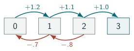
走廊上的势差附加奖励 F F F F F F F F F
原奖励取零、只加 F F F 0 → 1 → 2 → 3 0\to1\to2\to3 0 → 1 → 2 → 3 1.2 + . 9 × 1.1 + . 81 × 1.0 = 3 1.2+.9\times1.1+.81\times1.0=3 1.2 + .9 × 1.1 + .81 × 1.0 = 3 1.2 1.2 1.2 1.1 1.1 1.1 − . 8 -.8 − .8 1.1 1.1 1.1 3 3 3 − Φ ( 0 ) -\Phi(0) − Φ ( 0 ) F F F F F F 1 → 2 → 1 1\to2\to1 1 → 2 → 1 1.1 − . 9 × . 8 = . 38 1.1-.9\times.8=.38 1.1 − .9 × .8 = .38 ( 1 − γ 2 ) ( − Φ ( 1 ) ) (1-\gamma^2)\bigl(-\Phi(1)\bigr) ( 1 − γ 2 ) ( − Φ ( 1 ) ) − Φ ( 1 ) = 2 -\Phi(1)=2 − Φ ( 1 ) = 2 γ 2 \gamma^2 γ 2 . 38 .38 .38 γ = 1 \gamma=1 γ = 1
对势差塑形的用处有不同意见。一种看法认为，它既然不改变最优策略，在理论上什么也没做，用处只在加快学习；加快多少取决于势函数选得好不好，选得差的势同样可能拖慢学习。另一种看法指出，定理保护的是最优策略，不保护学习过程中的行为。Wiewiora（2003） 证明，表格 Q 学习中加势差塑形，等价于用势函数初始化 Q 值；势选得不好，相当于初值选得不好，学习可能明显变慢。Sutton 与 Barto 第 2 版 §17.4 讨论了奖励设计中的这些问题。
选读：进展奖励不是势差
势差塑形让每条路线多出同一个数；第 1 章走廊的进展奖励做不到，来回走反而更好。走廊 γ = . 9 \gamma=.9 γ = .9 Φ ( s ) = s − 3 \Phi(s)=s-3 Φ ( s ) = s − 3 F F F G 0 G_0 G 0 0 → 1 → 2 → 1 → 2 → ⋯ 0\to1\to2\to1\to2\to\cdots 0 → 1 → 2 → 1 → 2 → ⋯
奖励
直走 0 → 1 → 2 → 3 0\to1\to2\to3 0 → 1 → 2 → 3
1、2 间来回
进展奖励（第 1 章）
2.71 2.71 2.71 109 / 19 ≈ 5.74 109/19\approx5.74 109/19 ≈ 5.74
每步 − 1 -1 − 1
− 2.71 -2.71 − 2.71 − 10 -10 − 10
每步 − 1 -1 − 1 F F F
. 29 .29 .29 − 7 -7 − 7
只有 F F F
3 3 3 3 3 3
加 F F F − Φ ( 0 ) = 3 -\Phi(0)=3 − Φ ( 0 ) = 3
原因可以从势差的条件推出。设进展奖励等于 γ Φ ( s ′ ) − Φ ( s ) \gamma\Phi(s')-\Phi(s) γ Φ ( s ′ ) − Φ ( s ) r ( 2 , 1 ) = 0 r(2,1)=0 r ( 2 , 1 ) = 0 Φ ( 2 ) = γ Φ ( 1 ) \Phi(2)=\gamma\Phi(1) Φ ( 2 ) = γ Φ ( 1 ) r ( 1 , 2 ) = 1 r(1,2)=1 r ( 1 , 2 ) = 1 Φ ( 1 ) = − 1 / ( 1 − γ 2 ) = − 100 / 19 \Phi(1)=-1/(1-\gamma^2)=-100/19 Φ ( 1 ) = − 1/ ( 1 − γ 2 ) = − 100/19 r ( 2 , 3 ) = 1 r(2,3)=1 r ( 2 , 3 ) = 1 Φ ( 3 ) = − 710 / 171 ≈ − 4.15 \Phi(3)=-710/171\approx-4.15 Φ ( 3 ) = − 710/171 ≈ − 4.15 γ T Φ ( 3 ) < 0 \gamma^T\Phi(3)<0 γ T Φ ( 3 ) < 0 r ( 1 , 0 ) = 0 r(1,0)=0 r ( 1 , 0 ) = 0 r ( 0 , 1 ) = 1 r(0,1)=1 r ( 0 , 1 ) = 1
表中数值按精确分数计算：直接对两条轨迹求和，来回走取足够长的截断并与闭式解比较；再在走廊上做价值迭代（动作为左、右，在 0 向左原地不动）。进展奖励下格子 2 的最优动作是向左，永不到达；另两种奖励下各格都向右，加塑形后的价值 . 29 , . 1 , 0 .29,.1,0 .29 , .1 , 0
已解决的部分与条件 有限 MDP 中存在 γ 0 < 1 \gamma_0<1 γ 0 < 1 γ ∈ ( γ 0 , 1 ) \gamma\in(\gamma_0,1) γ ∈ ( γ 0 , 1 ) F = γ Φ ( s ′ ) − Φ ( s ) F=\gamma\Phi(s')-\Phi(s) F = γ Φ ( s ′ ) − Φ ( s ) Q Q Q Φ \Phi Φ
已有做法与假设 实践中常取 γ \gamma γ
未解决的部分 用函数逼近时，没有 Blackwell 那样的结论：不同 γ \gamma γ γ → 1 \gamma\to1 γ → 1
怎样检验 在泥地上算出 S7 首动作的切换点 γ ≈ . 7394 \gamma\approx.7394 γ ≈ .7394 γ \gamma γ Φ ( s ) = s − 3 \Phi(s)=s-3 Φ ( s ) = s − 3
3.7 分布模型、采样模型与实际经验课件
分布模型列出全部后果，采样与实际交互每次只给一个后果。前面的 v π 0 ( S 4 ) = 10 / 19 v_{\pi_0}(\mathrm{S4})=10/19 v π 0 ( S4 ) = 10/19 . 1 .1 .1 p p p 环境模型 指智能体可用来预测动作后果的表示或程序。走到泥地向上走一次，获得一条实际转移。用模型在同一格试走一次，获得一条模拟转移，实际位置没有因此改变。研究者知道泥地的真实概率，可以只把实际转移交给学习器；学习器也可以根据自己走过的路估计一个不完全准确的模型。
分布模型给出各种后果及其概率，可据此做期望更新。采样模型一次产生一个可能后果，可在允许的状态上反复模拟并取平均。能够从任意状态开始模拟，是额外的访问条件。同一个游戏程序若只接受当前局面的着法，就是任务的环境；允许智能体复制局面并在副本上试走时，副本还提供了规划用的采样模型。
同在 S4 向上，三种操作得到的东西不同（假定两种模型都准确）：
操作
一次得到什么
实际回合
在泥地向上走
一个真实后果，例如 ( S 4 , 0 ) (\mathrm{S4},0) ( S4 , 0 )
前进一步
向采样模型查询
一个模拟后果，例如 ( S 4 , 0 ) (\mathrm{S4},0) ( S4 , 0 )
保持原状
向分布模型查询
( S 4 , 0 ) (\mathrm{S4},0) ( S4 , 0 ) . 9 .9 .9 ( G , 1 ) (\mathrm G,1) ( G , 1 ) . 1 .1 .1 保持原状
第一行打滑后仍在原格，但已经执行了一个动作，时间从 t t t t + 1 t+1 t + 1 ( s ′ , r ) (s',r) ( s ′ , r ) 第 4 章 假定分布模型已知，对全部后果求和；第 5 章 只用实际后果作样本更新。
选读：状态可见与模型未知
看得见状态时，转移概率仍须由模型给出，或由多次尝试估计。设智能体能看见自己在 S4，向上尝试三次，记录到两次打滑、一次脱困：
S 4 → 0 S 4 → 0 S 4 → 1 G . \mathrm{S4}\xrightarrow{\;0\;}\mathrm{S4}\xrightarrow{\;0\;}\mathrm{S4}\xrightarrow{\;1\;}\mathrm G. S4 0 S4 0 S4 1 G .
令 b b b
候选模型
脱困概率
按记录先后顺序的概率 ( 1 − b ) 2 b (1-b)^2b ( 1 − b ) 2 b
模型一（本课泥地）
. 1 .1 .1 . 9 2 × . 1 = . 081 .9^2\times.1=.081 . 9 2 × .1 = .081
模型二
. 5 .5 .5 . 5 2 × . 5 = . 125 .5^2\times.5=.125 . 5 2 × .5 = .125
两个模型都可能产生这段记录。三次结果按先后顺序固定，所以似然是 ( 1 − b ) 2 b (1-b)^2b ( 1 − b ) 2 b . 125 / . 081 ≈ 1.5 .125/.081\approx1.5 .125/.081 ≈ 1.5 b b b
章首的问题有了答案：γ = . 9 \gamma=.9 γ = .9 q ∗ ( S 7 , ← ) = . 9 5 ≈ . 590 q_*(\mathrm{S7},\leftarrow)=.9^5\approx.590 q ∗ ( S7 , ← ) = . 9 5 ≈ .590 q ∗ ( S 7 , ↑ ) = . 9 × 10 / 19 = 9 / 19 ≈ . 474 q_*(\mathrm{S7},\uparrow)=.9\times10/19=9/19\approx.474 q ∗ ( S7 , ↑ ) = .9 × 10/19 = 9/19 ≈ .474 . 270 .270 .270 . 132 .132 .132 . 739 .739 .739
回报 （3.2 节）回答奖励迟到：G t = ∑ k ≥ 0 γ k R t + k + 1 = R t + 1 + γ G t + 1 G_t=\sum_{k\ge0}\gamma^kR_{t+k+1}=R_{t+1}+\gamma G_{t+1} G t = ∑ k ≥ 0 γ k R t + k + 1 = R t + 1 + γ G t + 1 G 0 = . 9 3 = . 729 G_0=.9^3=.729 G 0 = . 9 3 = .729 价值 （3.3 节）回答结果随机：v π ( s ) = E π [ G t ∣ S t = s ] v_\pi(s)=\mathbb E_\pi[G_t\mid S_t=s] v π ( s ) = E π [ G t ∣ S t = s ] ( I − γ P π ) v π = r π (I-\gamma P_\pi)v_\pi=r_\pi ( I − γ P π ) v π = r π v π 0 ( S 4 ) = 10 / 19 v_{\pi_0}(\mathrm{S4})=10/19 v π 0 ( S4 ) = 10/19 动作价值与最优价值 （3.4 节）回答首步依赖以后的走法：q π ( s , a ) q_\pi(s,a) q π ( s , a ) v ∗ ( s ) = max a q ∗ ( s , a ) v_*(s)=\max_aq_*(s,a) v ∗ ( s ) = max a q ∗ ( s , a ) 核心等式 E π [ G t ∣ S t = s ] = E π [ R t + 1 + γ v π ( S t + 1 ) ∣ S t = s ] \mathbb E_\pi[G_t\mid S_t=s]=\mathbb E_\pi[R_{t+1}+\gamma v_\pi(S_{t+1})\mid S_t=s] E π [ G t ∣ S t = s ] = E π [ R t + 1 + γ v π ( S t + 1 ) ∣ S t = s ] 期限与回报准则 （3.5、3.6 节）：期限有限时决策状态须为 ( s , h ) (s,h) ( s , h ) F ( s , s ′ ) = γ Φ ( s ′ ) − Φ ( s ) F(s,s')=\gamma\Phi(s')-\Phi(s) F ( s , s ′ ) = γ Φ ( s ′ ) − Φ ( s ) − Φ ( s ) -\Phi(s) − Φ ( s ) 模型访问 （3.7 节）：分布模型列出全部后果及其概率，采样模型与实际交互每次只给一个后果；方程右端的同一个期望，可以对后果求和，也可以用样本估计。遗留问题 ：两类 Bellman 方程的右端都含模型 p p p 第 4 章 4.1 与 4.5 节假定 p p p 第 5 章 5.1 与 5.2 节只用实际后果作样本更新。
方法对照、主线矛盾与自测
本章没有算法，只有被求的量。它们都由同一个 p p p γ = . 9 \gamma=.9 γ = .9
量
定义
一步递推
泥地中的值
G t G_t G t ∑ k γ k R t + k + 1 \sum_k\gamma^kR_{t+k+1} ∑ k γ k R t + k + 1 G t = R t + 1 + γ G t + 1 G_t=R_{t+1}+\gamma G_{t+1} G t = R t + 1 + γ G t + 1 两次打滑：G 0 = . 729 G_0=.729 G 0 = .729
v π ( s ) v_\pi(s) v π ( s ) E π [ G t ∣ S t = s ] \mathbb E_\pi[G_t\mid S_t=s] E π [ G t ∣ S t = s ] 期望方程，线性：∑ a π ∑ s ′ , r p [ r + γ v π ( s ′ ) ] \sum_a\pi\sum_{s',r}p\,[r+\gamma v_\pi(s')] ∑ a π ∑ s ′ , r p [ r + γ v π ( s ′ )]
v π 0 ( S 4 ) = 10 / 19 v_{\pi_0}(\mathrm{S4})=10/19 v π 0 ( S4 ) = 10/19
q π ( s , a ) q_\pi(s,a) q π ( s , a ) E π [ G t ∣ S t = s , A t = a ] \mathbb E_\pi[G_t\mid S_t=s,A_t=a] E π [ G t ∣ S t = s , A t = a ] ∑ s ′ , r p [ r + γ v π ( s ′ ) ] \sum_{s',r}p\,[r+\gamma v_\pi(s')] ∑ s ′ , r p [ r + γ v π ( s ′ )] q π 0 ( S 7 , ← ) = . 59049 q_{\pi_0}(\mathrm{S7},\leftarrow)=.59049 q π 0 ( S7 , ← ) = .59049
v ∗ ( s ) v_*(s) v ∗ ( s ) max π v π ( s ) \max_\pi v_\pi(s) max π v π ( s ) 最优方程，非线性：max a ∑ s ′ , r p [ r + γ v ∗ ( s ′ ) ] \max_a\sum_{s',r}p\,[r+\gamma v_*(s')] max a ∑ s ′ , r p [ r + γ v ∗ ( s ′ )]
v ∗ ( S 7 ) = . 59049 v_*(\mathrm{S7})=.59049 v ∗ ( S7 ) = .59049
v ∗ , h ( s ) v_{*,h}(s) v ∗ , h ( s ) 只剩 h h h
max a ∑ s ′ , r p [ r + γ v ∗ , h − 1 ( s ′ ) ] \max_a\sum_{s',r}p\,[r+\gamma v_{*,h-1}(s')] max a ∑ s ′ , r p [ r + γ v ∗ , h − 1 ( s ′ )] v ∗ , 0 = 0 v_{*,0}=0 v ∗ , 0 = 0 S7，h = 2 h=2 h = 2 . 09 .09 .09
各行依次回答一次运行得了多少、给定策略有多好、换一个首动作会怎样、最多能有多好、期限有限时怎样选。回报是一次运行的随机结果；状态价值和动作价值是固定策略下回报的条件期望，两者的递推对动作按策略平均或指定首动作。最优价值对动作取最大。有限期限的最优价值按剩余步数逐层递推。3.3 节的选读还定义了折扣访问次数 n π ( s , a ) n_\pi(s,a) n π ( s , a ) J d 0 ( π ) = ∑ s , a n π ( s , a ) r ( s , a ) J_{d_0}(\pi)=\sum_{s,a}n_\pi(s,a)\,r(s,a) J d 0 ( π ) = ∑ s , a n π ( s , a ) r ( s , a ) ( S 4 , ↑ ) (\mathrm{S4},\uparrow) ( S4 , ↑ ) 90 / 19 90/19 90/19 v v v
表中 q π 0 ( S 7 , ← ) q_{\pi_0}(\mathrm{S7},\leftarrow) q π 0 ( S7 , ← ) v ∗ ( S 7 ) v_*(\mathrm{S7}) v ∗ ( S7 ) . 59049 .59049 .59049 π 0 \pi_0 π 0 π 0 \pi_0 π 0
主线矛盾一：偏差与方差。 从 S4 出发，完整回报 G G G γ k \gamma^k γ k . 1 ( . 9 ) k .1(.9)^k .1 ( .9 ) k . 1 / ( 1 − . 729 ) ≈ . 369 .1/(1-.729)\approx.369 .1/ ( 1 − .729 ) ≈ .369 . 277 .277 .277 . 092 .092 .092 R + γ v π 0 ( S ′ ) R+\gamma v_{\pi_0}(S') R + γ v π 0 ( S ′ ) 1 1 1 . 9 × 10 / 19 .9\times10/19 .9 × 10/19 10 / 19 10/19 10/19 . 025 .025 .025 第 5 章 只能用估计 V V V v π 0 v_{\pi_0} v π 0
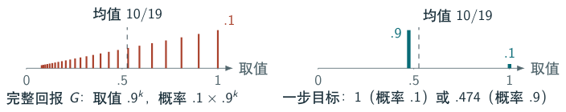
完整回报与一步目标的分布。两图横轴是取值，竖线高是概率，虚线是均值 10 / 19 10/19 10/19 G G G . 9 k .9^k . 9 k . 1 × . 9 k .1\times.9^k .1 × . 9 k
对第一条矛盾也有不同意见：在深度强化学习里，更大的困难常来自优化本身和数据分布的漂移，不只是偏差与方差（第 10 章）。
主线矛盾二：行为与目标不同。 π 0 \pi_0 π 0 ( S 7 , ← ) (\mathrm{S7},\leftarrow) ( S7 , ← ) q π 0 ( S 7 , ← ) = . 59049 q_{\pi_0}(\mathrm{S7},\leftarrow)=.59049 q π 0 ( S7 , ← ) = .59049 第 4 章 用模型直接计算；第 6 章 用另一条会探索的行为策略收集数据，再校正行为与目标的差别。
泥地任务：从 S7 出发，S4 的任何动作都以 . 9 .9 .9 G \mathrm G G 1 1 1 γ = . 9 \gamma=.9 γ = .9 π 0 \pi_0 π 0
轨迹 S 7 , S 4 , S 4 , G \mathrm{S7},\mathrm{S4},\mathrm{S4},\mathrm G S7 , S4 , S4 , G π 0 \pi_0 π 0 G 0 G_0 G 0 答要点： 1 × . 9 × . 1 = . 09 1\times.9\times.1=.09 1 × .9 × .1 = .09 ( 0 , 0 , 1 ) (0,0,1) ( 0 , 0 , 1 ) G 0 = . 9 2 = . 81 G_0=.9^2=.81 G 0 = . 9 2 = .81
用 Bellman 方程求 u = v π 0 ( S 4 ) u=v_{\pi_0}(\mathrm{S4}) u = v π 0 ( S4 ) 答要点： u = . 1 ( 1 + γ ⋅ 0 ) + . 9 ( 0 + γ u ) u=.1(1+\gamma\cdot0)+.9(0+\gamma u) u = .1 ( 1 + γ ⋅ 0 ) + .9 ( 0 + γ u ) u = . 1 / . 19 = 10 / 19 u=.1/.19=10/19 u = .1/.19 = 10/19 u u u
求 q π 0 ( S 4 , ↓ ) q_{\pi_0}(\mathrm{S4},\downarrow) q π 0 ( S4 , ↓ ) 答要点： . 1 ( . 9 ⋅ 9 19 ) + . 9 ( . 9 ⋅ 10 19 ) = 8.91 / 19 ≈ . 469 < 10 / 19 ≈ . 526 .1(.9\cdot\tfrac9{19})+.9(.9\cdot\tfrac{10}{19})=8.91/19\approx.469<10/19\approx.526 .1 ( .9 ⋅ 19 9 ) + .9 ( .9 ⋅ 19 10 ) = 8.91/19 ≈ .469 < 10/19 ≈ .526
求 q π 0 ( S 7 , ← ) q_{\pi_0}(\mathrm{S7},\leftarrow) q π 0 ( S7 , ← ) π 0 \pi_0 π 0 答要点： . 9 v π 0 ( S 6 ) = . 9 5 = . 59049 > 9 / 19 ≈ . 474 .9\,v_{\pi_0}(\mathrm{S6})=.9^5=.59049>9/19\approx.474 .9 v π 0 ( S6 ) = . 9 5 = .59049 > 9/19 ≈ .474 v ∗ ( S 7 ) = . 59049 v_*(\mathrm{S7})=.59049 v ∗ ( S7 ) = .59049 π 0 \pi_0 π 0
从 S4 出发，比较完整回报 G G G R + γ v π 0 ( S ′ ) R+\gamma v_{\pi_0}(S') R + γ v π 0 ( S ′ ) 答要点： 均值都是 10 / 19 10/19 10/19 . 092 .092 .092 . 025 .025 .025
只剩 h = 2 h=2 h = 2 s s s 答要点： . 9 × . 1 = . 09 .9\times.1=.09 .9 × .1 = .09 0 0 0 h = 6 h=6 h = 6 . 59049 .59049 .59049 h h h ( s , h ) (s,h) ( s , h )
只有 π 0 \pi_0 π 0 q π 0 ( S 7 , ← ) q_{\pi_0}(\mathrm{S7},\leftarrow) q π 0 ( S7 , ← ) 答要点： 不能。数据里没有起点向左的后果；需要模型 p p p
延伸阅读
Sutton 与 Barto，《Reinforcement Learning: An Introduction》第 2 版，第 3 章 §§3.1–3.6。有限 MDP、回报、价值函数与 Bellman 方程的标准讲法，回收机器人等例子与本章互为对照，备份图的画法也出自这里。
Sutton 与 Barto，第 2 版，§10.3–§10.4。持续任务中的平均奖励准则，以及用函数逼近时折扣只是求解参数的论证，对应 3.6 节的选读“平稳起点的恒等式”。
Sutton 与 Barto，第 2 版，§17.4。奖励信号的设计，讨论塑形奖励在学习过程中的作用与风险，可接着 3.6 节的势差塑形读。
Puterman（1994），《Markov Decision Processes: Discrete Stochastic Dynamic Programming》。第 6 章给出折扣 MDP 中最优平稳确定性策略存在的完整证明；第 8 章讨论平均奖励准则，3.6 节选读中折扣价值的展开见 §8.2.2。
Blackwell（1962），Discrete Dynamic Programming 。证明 γ \gamma γ
Ng、Harada 与 Russell（1999），Policy Invariance under Reward Transformations: Theory and Application to Reward Shaping，ICML。势差塑形保持最优策略的原始结果，并举例说明不取势差形式的附加奖励可能改变最优策略。
Pardo、Tavakoli、Levdik 与 Kormushev（2018），Time Limits in Reinforcement Learning ，ICML。区分时限属于任务与时限只是采集截断两种情形，3.5 节选读的 Hopper 实验取自这里。
Silver，UCL 强化学习课程第 2 讲（Markov Decision Processes）。从马尔可夫过程、马尔可夫奖励过程讲到 MDP，可对照本章固定策略后得到的线性方程组。
练习
除特别说明外，使用正文的泥地任务、γ = . 9 \gamma=.9 γ = .9 π 0 \pi_0 π 0
练习 3.1 一步模型与马尔可夫性质。（a）写出 p ( ⋅ , ⋅ ∣ S 4 , ↓ ) p(\cdot,\cdot\mid\mathrm{S4},\downarrow) p ( ⋅ , ⋅ ∣ S4 , ↓ ) P ( ⋅ ∣ S 4 , ↓ ) P(\cdot\mid\mathrm{S4},\downarrow) P ( ⋅ ∣ S4 , ↓ ) r ( S 4 , ↓ ) r(\mathrm{S4},\downarrow) r ( S4 , ↓ )
提示与核对： （a）p ( S 7 , 0 ∣ S 4 , ↓ ) = . 1 p(\mathrm{S7},0\mid\mathrm{S4},\downarrow)=.1 p ( S7 , 0 ∣ S4 , ↓ ) = .1 p ( S 4 , 0 ∣ S 4 , ↓ ) = . 9 p(\mathrm{S4},0\mid\mathrm{S4},\downarrow)=.9 p ( S4 , 0 ∣ S4 , ↓ ) = .9 P ( S 7 ∣ S 4 , ↓ ) = . 1 P(\mathrm{S7}\mid\mathrm{S4},\downarrow)=.1 P ( S7 ∣ S4 , ↓ ) = .1 P ( S 4 ∣ S 4 , ↓ ) = . 9 P(\mathrm{S4}\mid\mathrm{S4},\downarrow)=.9 P ( S4 ∣ S4 , ↓ ) = .9 r ( S 4 , ↓ ) = 0 r(\mathrm{S4},\downarrow)=0 r ( S4 , ↓ ) = 0 x x x S t S_t S t
练习 3.2 折扣取 . 5 .5 .5 v π 0 ( S 4 ) v_{\pi_0}(\mathrm{S4}) v π 0 ( S4 ) v π 0 ( S 7 ) v_{\pi_0}(\mathrm{S7}) v π 0 ( S7 ) q π 0 ( S 7 , ← ) q_{\pi_0}(\mathrm{S7},\leftarrow) q π 0 ( S7 , ← ) n π 0 ( S 4 , ↑ ) n_{\pi_0}(\mathrm{S4},\uparrow) n π 0 ( S4 , ↑ ) J d 0 = ∑ s , a n π 0 ( s , a ) r ( s , a ) J_{d_0}=\sum_{s,a}n_{\pi_0}(s,a)\,r(s,a) J d 0 = ∑ s , a n π 0 ( s , a ) r ( s , a ) v π 0 ( S 7 ) v_{\pi_0}(\mathrm{S7}) v π 0 ( S7 ) γ \gamma γ
提示与核对： （a）v π 0 ( S 4 ) = . 1 / ( 1 − . 9 γ ) = 2 / 11 ≈ . 1818 v_{\pi_0}(\mathrm{S4})=.1/(1-.9\gamma)=2/11\approx.1818 v π 0 ( S4 ) = .1/ ( 1 − .9 γ ) = 2/11 ≈ .1818 v π 0 ( S 7 ) = 1 / 11 ≈ . 0909 v_{\pi_0}(\mathrm{S7})=1/11\approx.0909 v π 0 ( S7 ) = 1/11 ≈ .0909 q π 0 ( S 7 , ← ) = . 5 5 = . 03125 q_{\pi_0}(\mathrm{S7},\leftarrow)=.5^5=.03125 q π 0 ( S7 , ← ) = . 5 5 = .03125 . 9 .9 .9 n π 0 ( S 4 , ↑ ) = . 5 / ( 1 − . 45 ) = 10 / 11 n_{\pi_0}(\mathrm{S4},\uparrow)=.5/(1-.45)=10/11 n π 0 ( S4 , ↑ ) = .5/ ( 1 − .45 ) = 10/11 ( S 4 , ↑ ) (\mathrm{S4},\uparrow) ( S4 , ↑ ) J = ( 10 / 11 ) ( . 1 ) = 1 / 11 J=(10/11)(.1)=1/11 J = ( 10/11 ) ( .1 ) = 1/11 . 1 γ / ( 1 − . 9 γ ) .1\gamma/(1-.9\gamma) .1 γ / ( 1 − .9 γ ) γ 5 \gamma^5 γ 5 γ ≈ . 7394 \gamma\approx.7394 γ ≈ .7394
练习 3.3 一步备份与收缩。（a）在 S4 以 . 5 .5 .5 . 5 .5 .5 V ( S 4 ) = . 5 V(\mathrm{S4})=.5 V ( S4 ) = .5 V ( S 7 ) = . 4 V(\mathrm{S7})=.4 V ( S7 ) = .4 V ( G ) = 0 V(\mathrm G)=0 V ( G ) = 0 ( T π V ) ( S 4 ) (T_\pi V)(\mathrm{S4}) ( T π V ) ( S4 ) P π P_\pi P π x x x ∥ γ P π x ∥ ∞ ≤ γ ∥ x ∥ ∞ \|\gamma P_\pi x\|_\infty\le\gamma\|x\|_\infty ∥ γ P π x ∥ ∞ ≤ γ ∥ x ∥ ∞ γ < 1 \gamma<1 γ < 1 ( I − γ P π ) v = r π (I-\gamma P_\pi)v=r_\pi ( I − γ P π ) v = r π
提示与核对： （a）向上分支 . 1 × 1 + . 9 × . 9 × . 5 = . 505 .1\times1+.9\times.9\times.5=.505 .1 × 1 + .9 × .9 × .5 = .505 . 1 × . 9 × . 4 + . 9 × . 9 × . 5 = . 441 .1\times.9\times.4+.9\times.9\times.5=.441 .1 × .9 × .4 + .9 × .9 × .5 = .441 . 473 .473 .473 ∣ ( P π x ) i ∣ ≤ ∑ j P i j ∣ x j ∣ ≤ ∥ x ∥ ∞ |(P_\pi x)_i|\le\sum_jP_{ij}|x_j|\le\|x\|_\infty ∣ ( P π x ) i ∣ ≤ ∑ j P ij ∣ x j ∣ ≤ ∥ x ∥ ∞ ( I − γ P π ) d = 0 (I-\gamma P_\pi)d=0 ( I − γ P π ) d = 0 ∥ d ∥ ∞ = ∥ γ P π d ∥ ∞ ≤ γ ∥ d ∥ ∞ \|d\|_\infty=\|\gamma P_\pi d\|_\infty\le\gamma\|d\|_\infty ∥ d ∥ ∞ = ∥ γ P π d ∥ ∞ ≤ γ ∥ d ∥ ∞ d = 0 d=0 d = 0
练习 3.4 打滑概率。把 S4 的打滑概率改为 ρ \rho ρ v π 0 ( S 7 ) v_{\pi_0}(\mathrm{S7}) v π 0 ( S7 ) ρ \rho ρ ρ \rho ρ
提示与核对： S4 的方程是 u = ( 1 − ρ ) + ρ γ u u=(1-\rho)+\rho\,\gamma u u = ( 1 − ρ ) + ρ γ u v π 0 ( S 7 ) = . 9 u = . 9 ( 1 − ρ ) / ( 1 − . 9 ρ ) v_{\pi_0}(\mathrm{S7})=.9u=.9(1-\rho)/(1-.9\rho) v π 0 ( S7 ) = .9 u = .9 ( 1 − ρ ) / ( 1 − .9 ρ ) . 9 5 .9^5 . 9 5 ρ ≈ . 8398 \rho\approx.8398 ρ ≈ .8398 ρ \rho ρ
练习 3.5 有限期限。用有限期限递推 v ∗ , h ( s ) = max a ∑ s ′ , r p ( s ′ , r ∣ s , a ) [ r + γ v ∗ , h − 1 ( s ′ ) ] v_{*,h}(s)=\max_a\sum_{s',r}p(s',r\mid s,a)[r+\gamma v_{*,h-1}(s')] v ∗ , h ( s ) = max a ∑ s ′ , r p ( s ′ , r ∣ s , a ) [ r + γ v ∗ , h − 1 ( s ′ )] v ∗ , 0 ≡ 0 v_{*,0}\equiv0 v ∗ , 0 ≡ 0 h = 3 h=3 h = 3 h = 5 h=5 h = 5
提示与核对： 先算 S4：v ∗ , 1 ( S 4 ) = . 1 v_{*,1}(\mathrm{S4})=.1 v ∗ , 1 ( S4 ) = .1 v ∗ , 2 ( S 4 ) = . 1 + . 9 × . 9 × . 1 = . 181 v_{*,2}(\mathrm{S4})=.1+.9\times.9\times.1=.181 v ∗ , 2 ( S4 ) = .1 + .9 × .9 × .1 = .181 h = 3 h=3 h = 3 . 9 × . 181 = . 1629 .9\times.181=.1629 .9 × .181 = .1629 0 0 0 h = 5 h=5 h = 5 . 269779 .269779 .269779 . 131949 .131949 .131949
练习 3.6 势差塑形。取势函数 Φ ( S 4 ) = . 5 \Phi(\mathrm{S4})=.5 Φ ( S4 ) = .5 G \mathrm G G q π 0 ′ ( S 4 , ↑ ) q'_{\pi_0}(\mathrm{S4},\uparrow) q π 0 ′ ( S4 , ↑ ) q π 0 ( S 4 , ↑ ) − Φ ( S 4 ) q_{\pi_0}(\mathrm{S4},\uparrow)-\Phi(\mathrm{S4}) q π 0 ( S4 , ↑ ) − Φ ( S4 )
提示与核对： 成功：1 + ( 0 − . 5 ) = . 5 1+(0-.5)=.5 1 + ( 0 − .5 ) = .5 0 + ( . 9 × . 5 − . 5 ) = − . 05 0+(.9\times.5-.5)=-.05 0 + ( .9 × .5 − .5 ) = − .05 q ′ = . 1 × . 5 + . 9 ( − . 05 + . 9 q ′ ) q'=.1\times.5+.9(-.05+.9q') q ′ = .1 × .5 + .9 ( − .05 + .9 q ′ ) q ′ = . 005 / . 19 = 10 / 19 − . 5 ≈ . 0263 q'=.005/.19=10/19-.5\approx.0263 q ′ = .005/.19 = 10/19 − .5 ≈ .0263 q π ′ = q π − Φ q'_\pi=q_\pi-\Phi q π ′ = q π − Φ
下一章先给出模型，用每条分支的概率反复更新价值表。第 5 章在原策略产生的回合上比较 MC 与 TD。动态规划 · MC 与 TD 预测
泥地任务取自 Machado 的 CMPUT 365。状态价值及 Bellman 方程见 Sutton 与 Barto 第 3 章。五元组及固定策略诱导的马尔可夫奖励过程可对读 Silver 第 2 讲。Sutton 与 Barto 教材 · Silver 课件 · Machado 泥地任务 · 本章数值与作图程序